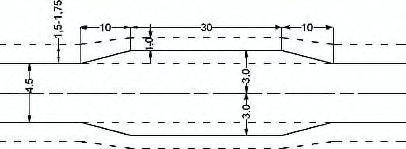
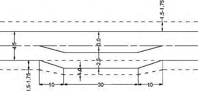
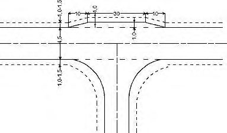
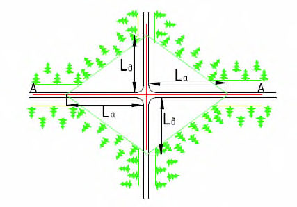

СП 99.13330.2016 «Внутрихозяйственные автомобильные дороги в»
О документе: разработчики, утверждение, регистрация, ключевые слова
СВОД ПРАВИЛ СП 99.13330.2016
Издание официальное
Москва 2016
1 ИСПОЛНИТЕЛЬ - ЗАО «ПРОМТРАНСНИИПРОЕКТ»
2 ВНЕСЕН Техническим комитетом по стандартизации ТК 465 «Строительство»
3 ПОДГОТОВЛЕН к утверждению Департаментом архитектуры, строительства и градостроительной политики Минстроя России.
4 УТВЕРЖДЕН приказом Министерства строительства и жилищнокоммунального хозяйства Российской Федерации от 30 декабря 2016 г. № 1029/пр и введен в действие с 1 июля 2017 г.
5 ЗАРЕГИСТРИРОВАН Федеральным агентством по техническому регулированию и метрологии (Росстандарт). Пересмотр СП 99.13330.2011 «СНиП 2.05.11-83 Внутрихозяйственные автомобильные дороги в колхозах, совхозах и других сельскохозяйственных предприятиях и организациях»
В случае пересмотра (замены) или отмены настоящего свода правил соответствующее уведомление будет опубликовано в установленном порядке. Соответствующая информация, уведомление и тексты размещаются также в информационной системе общего пользования - на официальном сайте разработчика (Минстрой России) в сети Интернет
© Минстрой России, 2016
Настоящий нормативный документ не может быть полностью или частично воспроизведен, тиражирован и распространен в качестве официального издания на территории Российской Федерации без разрешения Минстроя России
Дата введения - 2017-07-01
Введение
Настоящий свод правил разработан с учетом требований федеральных законов от 27 декабря 2002 г. № 184-ФЗ «О техническом регулировании» [1], от 22 июня 2008 г. № 123-ФЗ «Технический регламент о требованиях пожарной безопасности» [2], от 30 декабря 2009 г. № 384-ФЗ «Технический регламент о безопасности зданий и сооружений» [3], от 08 ноября 2007 г. № 257-ФЗ «Об автомобильных дорогах и о дорожной деятельности в Российской Федерации и о внесении изменений в отдельные законодательные акты Российской Федерации» [4] и постановления Правительства Российской Федерации от 28.09.2009 г. № 767 «О классификации автомобильных дорог в Российской Федерации» [5] , а также Постановления Правительства РФ от 15 июля 2013 г. № 598 «О федеральной целевой программе «Устойчивое развитие сельских территорий на 2014 - 2017 годы и на период до 2020 года» [6].
Актуализация свода правил выполнена авторским коллективом ЗАО «ПРОМТРАНСНИИПРОЕКТ» (д-р техн. наук Л.А. Андреева , канд. техн. наук А.Г. Колчанов , инж. И.П. Потапов , инж. А.В. Багинов ).
1Область применения
Настоящий cвод правил устанавливает нормы и правила на проектирование и строительство вновь строящихся и реконструируемых внутрихозяйственных дорог, находящихся на землях сельского поселения (далее - внутрихозяйственные дороги).
Настоящий свод правил не распространяется на автомобильные дороги общего пользования и улицы населенных пунктов, расположенных на территории сельских поселений.
2Нормативные ссылки
В настоящем своде правил использованы нормативные ссылки на следующие документы:
ГОСТ 17.4.3.02-85 Охрана природы. Почвы. Требования к охране плодородного слоя почвы при производстве земляных работ
ГОСТ 17.5.1.03-86 Охрана природы. Земли. Классификация вскрышных и вмещающих пород для биологической рекультивации земель
ГОСТ 17.5.3.04-83 Охрана природы. Земли. Общие требования к рекультивации земель
ГОСТ 3344-83 Щебень и песок шлаковые для дорожного строительства. Технические условия
\_\_\_\_\_\_\_\_\_\_\_\_\_\_\_\_\_\_\_\_\_\_\_\_\_\_\_\_\_\_\_\_\_\_\_\_\_\_\_\_\_\_\_\_\_\_\_\_\_\_\_\_\_\_\_\_\_\_\_\_\_\_\_\_\_\_\_\_\_\_
On-farm roads in the collective and state farms and other agricultural enterprises and organizations
СП 99.13330.2016
ГОСТ 8267-93 Щебень и гравий из плотных горных пород для строительных работ. Технические условия
ГОСТ 8736-2014 Песок для строительных работ. Технические условия
ГОСТ 9128-2013 Смеси асфальтобетонные полимерасфальтобетонные, асфальтобетон, полимерасфальтобетон для автомобильных дорог и аэродромов. Технические условия
ГОСТ 10060-2012 Бетоны. Методы определения морозостойкости
ГОСТ 10178-85 Портландцемент и шлакопортландцемент. Технические условия
ГОСТ 10180-2012 Бетоны. Методы определения прочности по контрольным образцам
ГОСТ 11955-82 Битумы нефтяные дорожные жидкие. Технические условия
ГОСТ 18105-2010 Бетоны. Правила контроля и оценки прочности
ГОСТ 22245-90 Битумы нефтяные дорожные вязкие. Технические условия
ГОСТ 22733-2002 Грунты. Метод лабораторного определения максимальной плотности
ГОСТ 23558-94 Смеси щебеночно-гравийно-песчаные и грунты, обработанные неорганическими вяжущими материалами, для дорожного и аэродромного строительства. Технические условия
ГОСТ 23732-2011 Вода для бетонов и строительных растворов. Технические условия
ГОСТ 25100-2011 Грунты. Классификация
ГОСТ 25192-2012 Бетоны. Классификация и общие технические требования
ГОСТ 25458-82 Опоры деревянные дорожных знаков. Технические условия
ГОСТ 25459-82 Опоры железобетонные дорожных знаков. Технические условия
ГОСТ 25607-2009 Смеси щебеночно-гравийно-песчаные для покрытий и оснований автомобильных дорог и аэродромов. Технические условия
ГОСТ 26633-2015 Бетоны тяжелые и мелкозернистые. Технические условия ГОСТ 27006-86 Бетоны. Правила подбора состава
ГОСТ 30491-2012 Смеси органоминеральные и грунты, укрепленные органическими вяжущими, для дорожного и аэродромного строительства. Технические условия
ГОСТ 31015-2002 Смеси асфальтобетонные и асфальтобетон щебеночномастичные. Технические условия
ГОСТ Р 50970-2011 Технические средства организации дорожного движения. Столбики сигнальные дорожные. Общие технические требования. Правила применения
ГОСТ Р 50971-2011 Технические средства организации дорожного движения. Световозвращатели дорожные. Общие технические требования. Правила применения
ГОСТ Р 51256-2011 Технические средства организации дорожного движения. Разметка дорожная. Классификация. Технические требования
ГОСТ Р 52051-2003 Механические транспортные средства и прицепы. Классификация и определения
ГОСТ Р 52129-2003 Порошок минеральный для асфальтобетонных и органоминеральных смесей. Технические условия
ГОСТ Р 52289-2004 Технические средства организации дорожного движения. Правила применения дорожных знаков, разметки, светофоров, дорожных ограждений и направляющих устройств
ГОСТ Р 52290-2004 Технические средства организации дорожного движения. Знаки дорожные. Общие технические требования
ГОСТ Р 52398-2005 Классификация автомобильных дорог. Основные параметры и требования
ГОСТ Р 52399-2005 Геометрические элементы автомобильных дорог
ГОСТ Р 52607-2006 Технические средства организации дорожного движения. Ограждения дорожные удерживающие боковые для автомобилей. Общие технические требования
СП 99.13330.2016
ГОСТ Р 52748-2007 Дороги автомобильные общего пользования. Нормативные нагрузки, расчетные схемы нагружения и габариты приближения
- СП 14.13330.2014 «СНиП II-7-81* Строительство в сейсмических районах» (с изменением № 1)
- СП 19.13330.2011 «СНиП II-97-76 Генеральные планы сельскохозяйственных предприятий» (с изменением № 1)
- СП 34.13330.2012 «СНиП 2.05.02-85* Автомобильные дороги»
- СП 35.13330.2011 «СНиП 2.05.03-84* Мосты и трубы»
- СП 42.13330.2011 «СНиП 2.07.01-89* Градостроительство. Планировка и застройка городских и сельских поселений»
- СП 45.13330.2012 «СНиП 3.02.01-87 Земляные сооружения, основания и фундаменты»
- СП 52.13330.2016 «СНиП 23-05-95* Естественное и искусственное освещение»
- СП 64.13330.2011 «СНиП II-25-80 Деревянные конструкции»
- СП 78.13330.2012 «СНиП 3.06.03-85 Автомобильные дороги»
- CП 104.13330.2011 «СНиП 2.06.15-85 Инженерная защита территории от затопления и подтопления»
- СП 131.13330.2012 «СНиП 23-01-99* Строительная климатология» (с изменением № 2)
- СанПиН 2.2.1/2.1.1.1200-03 Санитарно-защитные зоны и санитарная классификация предприятий, сооружений и иных объектов
- СанПиН 2.1.6.1032-01 Гигиенические требования к обеспечению качества атмосферного воздуха населенных мест
- СанПиН 2.1.7.1287-03 Санитарно-эпидемиологические требования к качеству почвы
- СанПиН 2.2.3.1384-03 Гигиенические требования к организации строительного производства и строительных работ
Примечание - При пользовании настоящим сводом правил целесообразно проверить действие ссылочных документов в информационной системе общего пользования - на официальном сайте федерального органа исполнительной власти в сфере стандартизации в сети Интернет или по ежегодному информационному указателю «Национальные стандарты», который опубликован по состоянию на 1 января текущего года, и по выпускам ежемесячного информационного указателя «Национальные стандарты» за текущий год. Если заменен ссылочный документ, на который дана недатированная ссылка, то рекомендуется использовать действующую версию этого документа с учетом всех внесенных в данную версию изменений. Если заменен ссылочный документ, на который дана датированная ссылка, то рекомендуется использовать версию этого документа с указанным выше годом утверждения (принятия). Если после утверждения настоящего свода правил в ссылочный документ, на который дана датированная ссылка, внесено изменение, затрагивающее положение, на которое дана ссылка, то это положение рекомендуется применять без учета данного изменения. Если ссылочный документ отменен без замены, то положение, в котором дана ссылка на него, рекомендуется применять в части, не затрагивающей эту ссылку. Сведения о действии сводов правил целесообразно проверить в Федеральном информационном фонде стандартов.
3Термины и определения
В настоящем своде правил применены термины по СП 34.13330, а также следующие термины с соответствующими определениями:
- 3.1внутрихозяйственные автомобильные дороги
- Местные автомобильные дороги, расположенные в границах сельского поселения, предназначенные для транспортного обслуживания объектов по производству, переработке и сбыту сельскохозяйственной и иной продукции. Внутрихозяйственные автомобильные дороги разделяются на две группы: магистральные и полевые.
- 3.2внутриплощадочные автомобильные дороги
- Дороги, расположенные в границах сельскохозяйственных предприятий (животноводческие комплексы, птицефабрики, тепличные комбинаты и т. п.).
- 3.3дорожная одежда капитального типа
- Дорожная одежда, обладающая наиболее высокой работоспособностью, соответствующей условиям движения и срокам службы дорог высоких категорий.
- 3.4дорожных одежд классификация
- Разделение дорожных одежд по типам исходя из их капитальности, характеризующей работоспособность дорожной одежды.
- 3.5местные автомобильные дороги в сельских поселениях (внутрихозяйственные дороги*)
- Дороги, обеспечивающие транспортную связь между хозяйственными центрами производственных подразделений, населенными пунктами, животноводческими фермами и комплексами, севооборотными массивами, другими производственными объектами, автомобильными дорогами общего пользования.
- 3.6объекты дорожного сервиса
- Здания, строения, сооружения, иные объекты, предназначенные для обслуживания участников дорожного движения по пути следования (автозаправочные станции, автостанции, автовокзалы, гостиницы, кемпинги, мотели, пункты общественного питания, станции технического обслуживания, подобные объекты), а также необходимые для их функционирования места отдыха и стоянки транспортных средств.
- 3.7основание
- Часть конструкции дорожной одежды, расположенная под покрытием и обеспечивающая совместно с покрытием перераспределение напряжений в конструкции и снижение их величины в грунте рабочего слоя земляного полотна (подстилающем грунте), а также морозоустойчивость и осушение конструкции. Следует различать несущую часть основания (несущее основание) и его дополнительные слои.
- 3.8основание насыпи
- Массив грунта в условиях естественного залегания, располагающийся ниже насыпного слоя.
- 3.9основание выемки
- Массив грунта ниже границы рабочего слоя.
- 3.10особо трудные участки горной местности
- Участки перевалов через горные хребты и участки горных ущелий со сложными, сильно изрезанными или неустойчивыми склонами.
- 3.11покрытие
- Верхняя часть дорожной одежды, состоящая из одного или нескольких единообразных по материалу слоев, непосредственно воспринимающая усилия от колес транспортных средств и подвергающаяся прямому воздействию атмосферных агентов. *В дальнейшем тексте настоящего свода правил вместо термина «местные автомобильные дороги в сельских поселениях» применен термин «внутрихозяйственные дороги».
- 3.12поверхностный водоотвод
- Устройства, предназначенные для отвода воды с поверхности дороги; дренажные устройства, служащие для отвода воды с поверхности земляного полотна.
- 3.13полевые дороги
- Пути, необходимые для обеспечения производственных процессов в пределах севооборотных массивов, полей, многолетних насаждений, сенокосов и пастбищ. Примечание - Полевые дороги подразделяют на основные и вспомогательные. Основные полевые дороги имеют значение полевых магистралей. Они обслуживают, как правило, группу полей или целый севооборот и предназначены для перевозок людей, грузов и перегона техники. Их размещают главным образом по коротким сторонам полей. Поэтому основные полевые дороги используют также для технологических целей (заправки агрегатов топливом, водой, семенами, разворота техники). Вспомогательные поперечные дороги, используемые преимущественно как линии обслуживания, размещают по тем сторонам полей, которые расположены ближе к населенному пункту или полевому стану и где более удобно обслуживать сельскохозяйственную технику. Вспомогательные продольные дороги располагают по длинным сторонам полей, межполосных и других рабочих участков. Их основное назначение - вывоз урожая, подвоз удобрений, обслуживание агрегатов при поперечной обработке, обеспечение переездов на другие поля
- 3.14плодородный слой почвы
- Гумуссированные грунты состава от глинистого до супесчаного, удовлетворяющие по физическому и химическому составу требованиям ГОСТ 17.5.1.03.
- 3.15предприятия по производству мяса, птицы и т. п.
- Животноводческие комплексы, птицефабрики и т. п.
- 3.16расчетная скорость
- Наибольшая возможная (по условиям устойчивости и безопасности) скорость движения автомобиля при нормальных условиях погоды и сцепления шин автомобилей с поверхностью проезжей части, которой на наиболее неблагоприятных участках трассы соответствуют предельно допустимые значения элементов дороги.
- 3.17специфические грунты
- Торфяные и заторфованные; сапропели; илы; иольдиевые глины; лессы; аргиллиты и алевролиты; мергели, глинистые мергели и мергелистые глины; трепел; тальковые и пирофиллитовые; дочетвертичные глинистые грунты, глинистые сланцы и сланцевые глины; черноземы; пески барханные; техногенные грунты (отходы промышленности). СП 99.13330.2016
- 3.18структурные подразделения сельскохозяйственного производства
- Бригады, отделения, животноводческие и другие комплексы, полевые станы и т. п.
- 3.19трудные участки пересеченной местности
- Рельеф, прорезанный часто чередующимися глубокими долинами, с разницей отметок долин и водоразделов более 50 м на расстоянии не более 0,5 км, с боковыми глубокими балками и оврагами, с неустойчивыми склонами.
- 3.20ценные сельскохозяйственные угодья
- Относятся орошаемые, осушенные и другие мелиоративные земли, участки, занятые многолетними плодовыми насаждениями и виноградниками, а также участки с высоким естественным плодородием почв и другие приравниваемые к ним земельные угодья.
4Общие положения
- обеспечение круглогодичных транспортных связей с объектами сельскохозяйственной переработки, сельскохозяйственного производства и иного вида производства, а также с объектами социальной инфраструктуры (объекты торговли, культуры и т. п.);
- увязка проектируемой сети внутрихозяйственных дорог с дорогами общего пользования (муниципальными, федеральными), вновь проектируемыми элементами инженерной инфраструктуры (линиями электропередач, радио- и телефонной сети, газо- и нефтепроводов, магистральных каналов и водопроводов и др.);
- минимальные капитальные вложения в строительство дорог и дорожных сооружений, снижение эксплуатационных расходов;
- минимальные транспортные расходы, повышение эффективности использования транспортных средств, своевременное выполнение транспортных работ;
- создание наилучших условий для правильной организации территории, рационального и полного использования сельскохозяйственных угодий.
Таблица 4.1 Классификация внутрихозяйственных дорог
| Назначение автомобильной дороги | Катего- рия | Среднегодовая суточная интен- сивность приведенных транспортных средств, ед. сут | Тип расчетного транс- портного средства (категория по ГОСТ Р 52051) на перспективный период |
|---|---|---|---|
| 1 Дороги, соединяющие админи- стративный центр сельского поселения с дорогами общего пользования и населен- ными пунктами сельского поселения | I вс | От 500 до 1500 | Не менее 10% - грузовые автомобили (N 3 ) общей массой более 12 т |
| 2 Дороги, соединяющие админи- стративный центр и населенные пункты сельских поселений с объектами произ- водства, заготовки, хранения и первичной переработки сельскохозяйственной про- дукции, а также с предприятиями по про- изводству другой продукции | II вс | От 300 до 500 | В составе потока не ме- нее 10 %грузовых транс- портных средств (N 2 ) массой до 12 т |
| 3 Дороги, соединяющие структурные под- разделения сельскохозяйственных пред- приятий и организаций, а также иных предприятий между собой | III вс | От 200 до 300 | Не менее 10 %-грузовые автомобили (N 3 ) общей массой более 12 т |
| 4 Внутренние дороги предприятий по производству мяса, птицы и т. п. (птице- | III вс | От 50 до 200 | Не менее 10 %-транс- портные средства (N 1 ) |
| фабрики, животноводческие, тепличные комплексы и т. п.) | массой не более 3,5 т | ||
|---|---|---|---|
| 5 Полевые вспомогательные дороги, предназначенные для транспортного об- служивания сельскохозяйственных уго- дий, мастерских и других вспомогатель- ных цехов | IV вс | До 50 | Не менее 10 %-грузовые автомобили массой до 12 т |
Таблица 4.2 - Коэффициенты приведения различных автомобилей к легковому автомобилю
| Тип транспортных средств | Коэффициент приведения |
|---|---|
| Легковые автомобили и мотоциклы, микроавтобусы | 1,0 |
| Грузовые автомобили грузоподъемностью, т: | |
| не более 2 включ. | 1,3 |
| св. 2 до 6 | 1,4 |
| св. 6 до 8 | 1,6 |
| св. 8 до 14 | 1,8 |
| св. 14 | 2,0 |
| Автопоезда грузоподъемностью, т: | |
| до 12 включ. | 1,8 |
| св. 12 до 20 | 2,2 |
| св. 20 до 30 | 2,7 |
| св. 30 | 3,2 |
| Колесные тракторы с прицепами грузоподъемностью включ. не более 3,5 т: | |
| с одним | 1,4 |
| с двумя | 1,7 |
| с тремя | 2,0 |
| Колесные тракторы с прицепами грузоподъемностью более 3,5 до 7,0 т включ.: | |
| с одним | 1,7 |
| с двумя | 2,0 |
| с тремя | 2,5 |
|---|---|
| Колесные тракторы с прицепами грузоподъемностью более 7,0 до 10,0 т включ.: | |
| с одним | 1,9 |
| с двумя | 2,5 |
| с тремя | 3,0 |
| Колесные тракторы с прицепами грузоподъемностью 15,0 т и выше: с одним | |
| 2,1 | |
| с двумя | 3,0 |
| с тремя | 3,5 |
| Зерноуборочная машина | 4,0 |
| Автобусы малой вместимости | 1,4 |
| То же, средней вместимости | 2,5 |
Перспективный период для выбора дорожных одежд принимают с учетом межремонтных сроков их службы.
За начальный год расчетного перспективного периода принимают год ввода дороги в эксплуатацию.
Проектные решения должны также предусматривать мероприятия по снижению влияния вредных факторов воздействия движения автотранспортных средств (загрязнение атмосферного воздуха, шум, вибрация) на население и окружающую среду в соответствии с требованиями законодательства в области охраны окружающей среды [10], [11].
Земельные участки, предоставленные на период строительства автомобильных дорог под притрассовые карьеры и резервы, размещение временных городков строителей, производственных баз, подъездных дорог и других нужд строительства, подлежат возврату землепользователям после их приведения в состояние, соответствующее положениям нормативных документов. Организация строительных работ и санитарно-бытовое обеспечение персонала в целях обеспечения оптимальных условий труда, снижения риска нарушения здоровья работающих, а также населения, проживающего в зоне проведения работ, регламентированы СанПиН 2.2.3.1384.
5Основные технические нормы
5.1Расчетные скорости
Таблица 5.1 Рекомендуемые скорости движения
| Рекомендуемая расчетная скорость, км/ч | Рекомендуемая расчетная скорость, км/ч | Рекомендуемая расчетная скорость, км/ч | |
|---|---|---|---|
| Категория дороги | Основная | Допускаемая на трудных участках местности | Допускаемая на трудных участках местности |
| пересеченной | горной | ||
| I вс | 70 | 50 | 30 |
| II вс | 60 | 40 | 30 |
| III вс | 40 | 40 | 40 |
| IV с | 30 | 30 | 20 |
5.2План и продольный профиль
- продольные уклоны - не более 40‰ расстояние видимости:
- для остановки - не менее 175 м,
- встречного автомобиля - 350 м; радиусы кривизны:
- для кривых в плане - не менее 1500 м; для кривых в продольном профиле:
- выпуклых - не менее 5000 м,
- вогнутых - не менее 2500 м.
Таблица 5.2 Расчетные параметры
| Параметр плана и продольного профиля | Значение параметров при расчетной скорости движения, км/ч | Значение параметров при расчетной скорости движения, км/ч | Значение параметров при расчетной скорости движения, км/ч | Значение параметров при расчетной скорости движения, км/ч | Значение параметров при расчетной скорости движения, км/ч |
|---|---|---|---|---|---|
| 70 | 60 | 40 | 30 | 20 | |
| Наибольший продольный уклон (усовер- шенствованные покрытия),‰ | 60 | 70 | 80 | 80 | 80 |
| Расчетные расстояния видимости, м: до остановки встречного автомобиля | 125 | 85 | 55 | 45 | 25 |
| 210 | 170 | 110 | 90 | 50 | |
| при обгоне | 600 | 500 | - | - | - |
| Наименьшие радиусы кривых, м: в плане (основные) | 200 | 150 | 80 | 80 | 80 |
| в плане (в трудных условиях) | 150 | 100 | 60 | 30 | 30 |
| в продольном профиле: выпуклых | 4000 | 2500 | 1000 | 600 | 400 |
| вогнутых | 2500 | 2000 | 1000 | 600 | 400 |
| вогнутых ( в трудных условиях ) | 800 | 600 | 300 | 200 | 100 |
Примечание - В местах с длительными периодами гололеда продольные уклоны должны быть уменьшены на 20 ‰
При расчете на массовое движение автопоездов (более 25 % в общем составе движения) наибольший продольный уклон следует принимать не более 70 ‰.
Таблица 5.3 Длина участка с затяжным уклоном
| Продольный уклон,‰ | Длина участка при высоте над уровнем моря, м | Длина участка при высоте над уровнем моря, м | Длина участка при высоте над уровнем моря, м |
|---|---|---|---|
| 1000 | 2000 | 3000 | |
| 60 | 1500 | 1200 | 800 |
| 70 | 1200 | 900 | 600 |
| 80 | 1000 | 600 | 500 |
| 90 | 500 | 200 | 150 |
Размеры площадок для остановки автомобилей определяют расчетом, но с учетом нахождения на ней не менее чем трех-пяти грузовых автомобилей, а выбор места их расположения - из условий безопасности стоянки, исключающей возможность появления осыпей, камнепадов и, по возможности, у источников воды.
Независимо от наличия площадок на затяжных спусках с уклонами более 50 ‰ предусматривают противоаварийные съезды, которые устраивают перед кривыми малых радиусов, расположенными в конце спуска, а также на прямых участках спуска через каждые 0,5-0,7 км. Элементы противоаварийных съездов определяют расчетом исходя из условия безопасной остановки автопоезда.
Длина обгонных участков
Таблица 5.4 -
| Расчетная скорость, км/ч | 70 | 60 | 50 | 40 | 30 |
|---|---|---|---|---|---|
| Длина обгонного участка, км | 0,80 | 0,75 | 0,60 | 0,50 | 0,40 |
Кривизну и ее изменение вдоль трассы назначают из условия плавного сопряжения элементов плана трассы и переломов проектной линии продольного профиля с учетом расчетной скорости, проектных решений по поперечному профилю покрытию проезжей части. При этом следует обеспечить для кривых в плане расстояние видимости, которое принимают по таблице 5.2.
Расстояния между площадками вне населенных пунктов принимают равными расстояниям видимости встречного автомобиля, но не более 0,5 км. Пересечения и примыкания на однополосных автомобильных дорогах служат местом для разъездов.
Разъезды проектируют на дорогах категорий IIIвс и IVвс в соответствии со схемами, приведенными на рисунке 5.1.
Рисунок 5.1 - Рекомендуемые схемы устройства площадок для разъезда автомобилей на однополосных дорогах

Ширину земляного полотна на разъездах принимают не менее 8 м для размещения двух полос движения (каждая 3,0 м) и двух обочин (каждая 1,0 м), а наименьшую длину разъезда - не менее 30 м.
Переход от однополосной проезжей части к двухполосной осуществляют на протяжении не менее 15 м.
Для крупногабаритных сельскохозяйственных машин и автопоездов указанные размеры должны быть увеличены до размеров, обеспечивающих их безопасный разворот.
Таблица 5.5 Наименьшие длины переходных кривых
| Элементы кривой в плане | Значения элементов кривой в плане, м | Значения элементов кривой в плане, м | Значения элементов кривой в плане, м | Значения элементов кривой в плане, м | Значения элементов кривой в плане, м | Значения элементов кривой в плане, м | Значения элементов кривой в плане, м | Значения элементов кривой в плане, м | Значения элементов кривой в плане, м | Значения элементов кривой в плане, м | Значения элементов кривой в плане, м |
|---|---|---|---|---|---|---|---|---|---|---|---|
| Радиус | 15 | 30 | 60 | 80 | 100 | 150 | 200 | 250 | 300 | 400 | 500 |
| Длина переходной кривой | 20 | 30 | 40 | 45 | 50 | 60 | 70 | 80 | 90 | 100 | 110 |
Смежные кривые в продольном профиле допускается проектировать примыкающими одна к другой без прямых вставок.
Параметры элементов серпантина принимают по таблице 5.6.
Таблица 5.6 - Параметры элементов серпантина
| Параметр элементов серпантина | Параметр серпантина при расчетной скорости движения, км/ч | Параметр серпантина при расчетной скорости движения, км/ч |
|---|---|---|
| 30 | 20 | |
| Наименьший радиус кривых в плане, м | 30 | 20 |
| Поперечный уклон проезжей части на вираже,‰ | 60 | 60 |
| Длина переходной кривой, м | 30 | 25 |
| Уширение проезжей части, м | 2,2 | 3,0 |
| Наибольший продольный уклон в пределах серпантина,‰ | 30 | 35 |
5.3Поперечный профиль
Таблица 5.7 Основные параметры поперечного профиля проезжей части
| Категория дороги | Число полос | Ширина полосы проезжей части, м | Ширина краевой полосы, м | Ширина обочины, м | Ширина обочины, м | Ширина зем- ляного полот- на, м (без ограждения) |
|---|---|---|---|---|---|---|
| Категория дороги | Число полос | Ширина полосы проезжей части, м | Ширина краевой полосы, м | Укреп- ленная часть | Ширина обочины без ограждения | Ширина зем- ляного полот- на, м (без ограждения) |
| I вс | 2 | 3,0 | 0,5 | 0,75 | 2,0 | 10,0 |
| II вс | 2 | 3,0 | 0,5 | 0,5 | 1,5 | 9,0 |
| III вс | 1 | 4,5 | 0,5 | 0,5 | 1,5 | 7,5 |
| IV вс | 1 | 4,5/6,0 * | - | - | 1,0 | 6,5/8,0 * |
\_\_\_\_\_\_\_\_\_
* Параметры дорог приведены для расчетного транспортного средства-зерноуборочной машины.
Примечание - В случае устройства ограждения ширина обочины и земляного полотна увеличивается на ширину ограждения.
СП 99.13330.2016
На тех участках дорог, где требуется установка ограждений барьерного типа, при регулярном движении широкогабаритных сельскохозяйственных машин (шириной более 2,5 м) ширина земляного полотна должна быть увеличена (за счет уширения обочин) в соответствии с требованиями 10.7.
- 9,0 м - для дорог категории Iвс;
- 8,0 м - для дорог категории IIвс;
- 6,5 м - для дорог категории IIIвс.
- 20 ‰ - для II-III дорожно-климатической зоны;
- 25 ‰ - для IV дорожно-климатической зоны;
- 15 ‰ - для V дорожно-климатической зоны.
На асфальтобетонных и цементобетонных покрытиях поперечный уклон принимают от 15 ‰ до 20 ‰.
На гравийных и щебеночных покрытиях поперечный уклон принимают от 25 ‰ до 30 ‰, а на покрытиях из грунтов, укрепленных местными материалами, - от 30 ‰ до 40 ‰.
- от 30 ‰ до 40 ‰ - при укреплении с применением вяжущих;
- от 40 ‰ до 60 ‰ - при укреплении гравием, щебнем, шлаком или замощении каменными материалами;
- от 50 ‰ до 60 ‰ - при укреплении дернованием или засевом трав. Для районов с небольшой продолжительностью снегового покрова и отсутствием гололеда для обочин, укрепленных дернованием, может быть допущен уклон от 50 ‰ до 80 ‰.
Таблица 5.8 Поперечные уклоны на виражах
| Скорость движения, км/ч | Поперечный уклон проезжей части на виражах, ‰, при радиусах кривых в плане, м | Поперечный уклон проезжей части на виражах, ‰, при радиусах кривых в плане, м | Поперечный уклон проезжей части на виражах, ‰, при радиусах кривых в плане, м | Поперечный уклон проезжей части на виражах, ‰, при радиусах кривых в плане, м | Поперечный уклон проезжей части на виражах, ‰, при радиусах кривых в плане, м | Поперечный уклон проезжей части на виражах, ‰, при радиусах кривых в плане, м | Поперечный уклон проезжей части на виражах, ‰, при радиусах кривых в плане, м | Поперечный уклон проезжей части на виражах, ‰, при радиусах кривых в плане, м |
|---|---|---|---|---|---|---|---|---|
| Скорость движения, км/ч | 500 | 400 | 300 | 250 | 200 | 150 | 100 | 60 |
| 70 | 20 | 20 | 25 | 30 | 40 | 50(40) | 60(40) | 60(40) |
| 60 | - | - | 20 | 30 | 40 | 40 | 50(40) | 60(40) |
| 50 | - | - | - | 20 | 25 | 30 | 40 | 60(40) |
| 40 | - | - | - | 20 | 25 | 30 | 40 | 60(40) |
| 30 | 20 | 25 | 30 | 40 | 60(40) |
Если расстояние между двумя смежными закруглениями, обращенными радиусами в одну сторону, меньше суммы длин отгонов виражей для этих закруглений, то между ними предусматривают также непрерывно односкатный профиль с уклоном этих виражей. Если уклоны данных смежных виражей неодинаковы, то предусматривают плавный отгон их разницы. При реконструкции, в целях уменьшения объемов работ по переустройству покрытия, на таких участках трассы допускается принимать переменные значения поперечных уклонов, соответствующие неполным отгонам этих смежных виражей.
На вираже поперечный уклон обочин и уклон проезжей части дороги принимают один и тот же. Переход от нормального уклона обочин при двускатном профиле к уклону проезжей части рекомендуется производить на протяжении 10 м до начала отгона виража.
Для дорог категорий IIIвс и IVвс величину уширения проезжей части, установленную в таблице 5.9, надлежит уменьшать вдвое.
Таблица 5.9 Уширения проезжей части
| Радиус кри- вой в плане | Уширение для одиночных автомобилей и автопоездов при расстоянии от переднего бампера до задней оси автомобиля или автопоезда, м | Уширение для одиночных автомобилей и автопоездов при расстоянии от переднего бампера до задней оси автомобиля или автопоезда, м | Уширение для одиночных автомобилей и автопоездов при расстоянии от переднего бампера до задней оси автомобиля или автопоезда, м | Уширение для одиночных автомобилей и автопоездов при расстоянии от переднего бампера до задней оси автомобиля или автопоезда, м | Уширение для одиночных автомобилей и автопоездов при расстоянии от переднего бампера до задней оси автомобиля или автопоезда, м | Уширение для одиночных автомобилей и автопоездов при расстоянии от переднего бампера до задней оси автомобиля или автопоезда, м | Уширение для одиночных автомобилей и автопоездов при расстоянии от переднего бампера до задней оси автомобиля или автопоезда, м |
|---|---|---|---|---|---|---|---|
| Радиус кри- вой в плане | до 7 м автомобиля и 11 м для автопоезда | 13 | 15 | 18 | 20 | 23 | 25 |
| 1000 | - | - | - | 0,3 | 0,3 | 0,4 | 0,4 |
| 850 | - | 0,2 | 0,3 | 0,3 | 0,4 | 0,4 | 0,5 |
| 650 | 0,2 | 0,3 | 0,3 | 0,4 | 0,5 | 0,6 | 0,6 |
| 575 | 0,3 | 0,3 | 0,4 | 0,4 | 0,5 | 0,6 | 0,7 |
| 425 | 0,3 | 0,4 | 0,4 | 0,6 | 0,6 | 0,8 | 0,9 |
| 325 | 0,4 | 0,5 | 0,5 | 0,7 | 0,8 | 1,0 | 1,2 |
| 225 | 0,5 | 0,6 | 0,7 | 1,0 | 1,1 | 1,4 | 1,6 |
| 140 | 0,7 | 0,9 | 1,1 | 1,4 | 1,7 | 2,2 | - |
| 95 | 0,8 | 1,1 | 1,4 | 1,9 | 2,3 | - | - |
| 80 | 1,0 | 1,3 | 1,6 | 2,2 | - | - | - |
| 70 | 1,1 | 1,4 | 1,8 | - | - | - | - |
| 60 | 1,3 | 1,7 | 2,2 | - | - | - | - |
| 50 | 1,5 | 2,0 | 2,5 | - | - | - | - |
| 40 | 1,8 | 2,4 | 3,1 | - | - | - | - |
| 30 | 2,3 | 3,2 | - | - | - | - | - |
Примечание - При движении автопоездов с числом прицепов и полуприцепов, а также расстоянием Ɩ , отличным от приведенных в настоящей таблице, требуемое уширение проезжей части надлежит определять расчетом.
В горной местности в виде исключения допускается размещать уширения проезжей части на кривых в плане частично с внешней стороны закругления. Целесообразность применения кривых с уширениями проезжей части более 2-3 м необходимо обосновать путем сопоставления с вариантами увеличения радиусов кривых в плане, при которых не требуется устройства таких уширений .
- 8 м - при ширине транспортных средств не более 3,0 м;
- 10 м - при ширине транспортных средств от 3,0 м до 6,0 м;
- 13 м - при ширине транспортных средств от 6,0 м до 8 м.
Участки перехода от однополосной проезжей части к площадке для разъезда должны быть не менее 15 м.
Дополнительный продольный уклон наружной кромки проезжей части по отношению к проектному продольному уклону на участках отгона виража принимают по таблице 5.10.
Таблица 5.10 Дополнительный продольный уклон
| Категория дороги | Тип местности | Уклон,‰ |
|---|---|---|
| I вс и II вс | В равнинной местности | 10 |
| IV вс | В горной местности | 20 |
При устройстве тупиковых дорог должны быть предусмотрены в конце тупика площадки для разворота транспортных средств, размеры которых следует принимать в зависимости от габаритов транспортных средств и перевозимых грузов, но не менее указанных в 5.12.
При намечаемом движении автомобилей и тракторов с полуприцепами, с одним или двумя прицепами радиус кривой допускается уменьшать до 30 м, а при движении одиночных транспортных средств - до 15 м.
Радиусы кривых в плане по кромке проезжей части и уширение проезжей части на кривых при въездах в здания, теплицы и т. п. следует определять в зависимости от расчетного типа подвижного состава, но не менее 15 м.
При технико-экономическом обосновании и в случаях, обусловленных обеспечением безопасности прохода обслуживающего персонала, соблюдением санитарных требований и необходимостью проектирования закрытого водоотвода (ливневой канализации, закрытых лотков и т. п.), допускается устройство бортового камня и тротуара с одной стороны проезжей части и обочины с другой или устройство бортового камня и тротуаров с двух сторон проезжей части.
СП 99.13330.2016
Смежные кривые в продольном профиле допускается проектировать примыкающими одна к другой без прямых вставок.
Устройство дорог для движения транспортных средств на гусеничном ходу на обособленном земляном полотне следует обосновать технико-экономическим расчетом.
Таблица 5.11 Ширина полосы движения и обособленного земляного полотна
| Ширина колеи транспортных средств, самоходных и прицепных машин, м | Ширина полосы движения, м | Ширина земляного по- лотна, м |
|---|---|---|
| 2,7 и менее | 3,5 | 4,5 |
| св. 2,7 до 3,1 | 4,0 | 5,0 |
| " 3,1 " 3,6 | 4,5 | 5,5 |
| " 3,6 " 5,0 | 5,5 | 6,5 |
На тракторных дорогах допускается устройство площадок для разъезда, ширину и длину которых надлежит принимать согласно 5.36.
Таблица 5.12 Продольные уклоны дорог
| Продольный уклон,‰ | Продольный уклон,‰ | |
|---|---|---|
| Направление продольного уклона в грузовом направлении | наибольший | допускаемый для трудных участ- ков |
| Подъем | 40 | 80 |
| Спуск | 60 | 100 |
15,0 м при движении тракторных поездов с одним или двумя прицепами и до 30,0 м - с тремя прицепами или при перевозке длинномерных грузов.
Таблица 5.13 Уширение земляного полотна
| Число тракторов и прицепов | Уширение земляного полотна, при радиусах кривых в плане, м | Уширение земляного полотна, при радиусах кривых в плане, м | Уширение земляного полотна, при радиусах кривых в плане, м | Уширение земляного полотна, при радиусах кривых в плане, м | Уширение земляного полотна, при радиусах кривых в плане, м |
|---|---|---|---|---|---|
| 15 | 30 | 50 | 80 | 100 | |
| Трактор: | |||||
| без прицепа | 1,50 | 0,55 | 0,35 | 0,20 | - |
| с одним прицепом | 2,50 | 1,10 | 0,65 | 0,40 | 0,25 |
| с двумя прицепами | 3,50 | 1,65 | 0,95 | 0,60 | 0,45 |
| с тремя прицепами | - | 2,15 | 1,30 | 0,80 | 0,65 |
6Пересечения и примыкания
В случае отсутствия таких сооружений на участках дорог протяженностью более 2 км при необходимости предусматривают их устройство.
Габариты искусственных сооружений для полевых дорог и скотопрогонов при отсутствии специальных требований заинтересованных организаций принимают по таблице 6.1.
Таблица 6.1 Габариты искусственных сооружений
| Назначение сооружений | Ширина, м | Высота, м |
|---|---|---|
| Для полевых дорог | 6 | 4,5 |
| Для прогона скота | 4 | 2,5 |
Таблица 6.2 Параметры переходно-скоростных полос
| Продольный уклон,‰ | Продольный уклон,‰ | Длина полос полной ширины, м | Длина полос полной ширины, м | Длина отгона полос разгона и торможения, м |
|---|---|---|---|---|
| на спуске | на подъеме | для разгона | для торможения | |
| 40 | - | 30 | 50 | 30 |
| 20 | - | 35 | 45 | 30 |
| 0 | 0 | 40 | 40 | 30 |
| - | 20 | 45 | 35 | 30 |
| - | 40 | 50 | 30 | 30 |
Примыкания внутрихозяйственных автомобильных дорог категорий Iвс, IIвс и IVвс к дорогам категорий Iвс, IIвс и IVвс и пересечения их между собой допускается предусмотреть в пределах кривых в плане радиусом не менее 100 м при условии обеспечения расчетных расстояний видимости поверхности дороги.
Таблица 6.3 Наименьшая длина переходной кривой
| Радиус круговой кривой | Наименьшая длина переходной кривой, м | Наименьшая длина переходной кривой, м |
|---|---|---|
| Радиус круговой кривой | Входной | Выходной |
| 30 | 17 | 15 |
| 25 | 18 | 17 |
| 20 | 19 | 17 |
| 15 | 20 | 19 |
В зоне пересечения или примыкания необходимо обеспечить видимость водителям, подъезжающим по главной и второстепенной дорогам, из условия остановки автомобилей до пересекаемых полос движения (см. рисунок 6.1). б)

- а) - на пересечениях автомобильных дорог в одном уровне; б) - на примыканиях автомобильных дорог в одном уровне; L a и L д - расстояние видимости поверхности дороги; L б - расстояние боковой видимости; граница зоны видимости показана пунктиром
Рисунок 6.1 - Схемы обеспечения видимости
Таблица 6.4 Минимальные расстояния видимости поверхности дороги
Примечание - Расположение глаз водителя принимают на расстоянии 1,75 м от кромки проезжей части и на высоте 1,20 м над проезжей частью.
| Расчетная скорость, км /час | Расчетная скорость, км /час | Расчетная скорость, км /час | Расчетная скорость, км /час | |
|---|---|---|---|---|
| Продольный уклон,‰ | 70 | 60 | 50 | 40 |
| Минимальные расстояния видимости поверхности дороги, м | Минимальные расстояния видимости поверхности дороги, м | Минимальные расстояния видимости поверхности дороги, м | Минимальные расстояния видимости поверхности дороги, м | |
| Плюс 40 | 90 | 65 | 50 | 40 |
| Плюс 20 | 95 | 70 | 55 | 45 |
| 0 | 100 | 75 | 60 | 50 |
| Минус 20 | 105 | 80 | 65 | 55 |
| Минус 40 | 110 | 85 | 70 | 60 |
- 300 м - при скорости движения по главной дороге 70 км/ч;
- 200 м - при скорости движения по главной дороге 60 км/ч;
- 100 м - при скорости движения по главной дороге 40 км/ч.
СП 99.13330.2016
Указанные расстояния обеспечивают обзорность водителям в зоне пересечения при условии остановки автомобиля на второстепенной дороге на расстоянии 10 м от кромки проезжей части главной дороги.
Боковое расстояние видимости на съездах следует принимать не менее 15 м при расчетных скоростях не более 60 км/ч и не менее 20 м - более 60 км/ч.
Рисунок 6.2 - Схема видимости по главной дороге и обзорности с второстепенной дорогой

- при песчаных, супесчаных и легких суглинистых грунтах - на протяжении 25 м;
- при черноземах, глинистых, тяжелых и пылеватых суглинистых грунтах - 50 м.
Протяженность покрытий въездов на дороги категорий IV и V предусматривают в размере 25 м.
Обочины на съездах и въездах при длине, установленной в настоящем пункте, следует укреплять на ширину не менее 0,5 м.
- пересечения трех и более главных железнодорожных путей;
- скорости движения поездов на пересекаемом участке железной дороги более 120 км/ч;
- интенсивности движения поездов более 100 поездов в сутки;
- пересечения железных дорог, проложенных в глубоких выемках, а также в тех случаях, когда не обеспечены нормы видимости согласно 6.9.
При пересечении подъездных железнодорожных путей предприятий указанные расстояния видимости допускается понижать по согласованию с организацией, в ведении которой находятся пути, соответственно до 200 и 600 м.
- при напряжении не более 110 кВ…………….. 7,0;
- » » не более 150 ………………...7,5;
- » » не более 220 ………………...8,0;
- » » не более 330 ……………........8,5;
- » » не более 500 ………….……...9,0.
При движении транспортных средств, нагружаемых на высоту более 4 м или при необходимости пропуска сельскохозяйственных машин высотой более 4 м, возвышение проводов над верхом проезжей части следует принимать по согласованию с соответствующим районным энергетическим управлением.
- при напряжении до 20 кВ…………….. 1,5;
- » » от 35 до 220 кВ………….....2,5;
- » » св. 220 кВ………..….……...5,0.
7Земляное полотно
7.1Общие положения
По условиям увлажнения верхней толщи грунтов различают три типа местности:
- 1-й - сухие участки;
- 2-й - сырые участки с избыточным увлажнением в отдельные периоды года;
- 3-й - мокрые участки с постоянным избыточным увлажнением.
- широко апробированных и не требующих дополнительного обоснования специальными расчетами типовых решений, отвечающими настоящему своду правил;
- индивидуальных конструктивных решений, требующих обоснования специальными расчетами (в том числе типовых решений, требующих индивидуальной привязки).
Кроме указанных параметров при осуществлении проектных решений могут требоваться особые контролируемые параметры, предусматриваемые в проекте (например, контроль осадок насыпей на слабых основаниях и т. п.).
Таблица 7.1 Основные нормативные требования при сооружении земля- ного полотна
| Конструктивный элемент, вид работ и контролируемый параметр | Значение нормативных требований |
|---|---|
| 1 Подготовка основания земляного полотна | 1 Подготовка основания земляного полотна |
| 1.1 Толщина снимаемого плодородного слоя грунта | Не более 10 %результатов определений могут иметь отклонения от проектных значений в пределах не более ± 40 %, остальные - не более ± 20% |
| 1.2 Снижение плотности естественного основания | Не более 10 %результатов определений могут иметь отклонения от проектных значений в пределах не более 4 %, остальные должны быть не ниже проектных значений |
| 2 Возведение насыпей и разработка выемок | 2 Возведение насыпей и разработка выемок |
|---|---|
| 2.1 Снижение плотности слоев земляного полотна | Не более 10 %результатов определений могут иметь отклонения от проектных значений в пределах не более 4 %, а остальные должны быть не ниже проектных значений |
| 2.2 Высотные отметки продольного профиля | Не более 10 %результатов определений могут иметь отклонения от проектных значений в пределах не более 20 мм; остальные - не более 10 мм |
| 2.3 Расстояния между осью и бровкой земляного полотна | Не более 10 %результатов определений могут иметь отклонения от проектных значений в пределах не более ± 20 см; остальные - не более ± 10 см |
| 2.4 Поперечные уклоны | Не более 10 %результатов определений могут иметь отклонения от проектных значений в пределах от минус 0,010 до плюс 0,015, остальные - не более ± 0,005 |
| 2.5 Уменьшение крутизны откосов | Не более 10 %результатов определений могут иметь отклонения от проектных значений в пределах не более 20 %, остальные - не более 10% |
| 3 Устройство водоотвода | 3 Устройство водоотвода |
| 3.1 Увеличение поперечных размеров кюветов, нагорных и других канав (по дну) | Не более 10 %результатов определений могут иметь отклонения от проектных значений в пределах не более 10 см, остальные - не более 5 см |
| 3.2 Глубина кюветов, нагорных и других канав (при условии обеспе- чения стока) | Не более 10 %результатов определений могут иметь отклонения от проектных значений в пределах не более ± 10 см, остальные - не более ± 5 см |
| 3.3 Поперечные размеры дренажей | Не более 10 %результатов определений могут иметь отклонения от проектных значений в пределах не более ± 10 см, остальные - не более ± 5 см |
| 3.4 Продольные уклоны дренажей | Не более 10 %результатов определений могут иметь отклонения от проектных значений в пределах не более ± 0,002, остальные - не более ± 0,001 |
| 3.5 Ширина насыпных берм | Не более 10 %результатов определений могут иметь отклонения от проектных значений в пределах не более ± 30 см, остальные - не более ± 15 см |
| 4 Устройство присыпных обочин | 4 Устройство присыпных обочин |
| 4.1 Снижение плотности грунта в обочинах | Не более 10 %результатов определений могут иметь отклонения от проектных значений в пределах не более 4 %, остальные должны быть не ниже проектных значений |
| 4.2 Толщина укрепления | Не более 10 %результатов определений могут иметь отклонения от проектных значений в пределах от минус 22 до 30 мм, осталь- ные - не более ± 15 мм |
| 4.3 Поперечные уклоны обочин | Не более 10 %результатов определений могут иметь отклонения от проектных значений в пределах от минус 0,010 до плюс 0,015, остальные - не более ± 0,005 (± 0,010) |
Примечания
1 При отсыпке земляного полотна из скальных (крупнообломочных) грунтов этот показатель для оценки качества не используется.
- 2 Значения, приведенные в скобках, относятся к видам работ, выполняемым без автоматических систем выдерживания заданных высотных отметок и уклона для дорог категорий I мс-IVмс.
7.2Грунты
Грунты для сооружения насыпей и рабочего слоя подразделяют по степени увлажнения в соответствии с таблицей Б.1 приложения Б.
7.3Рабочий слой земляного полотна
Таблица 7.2 Наименьшее возвышение поверхности покрытия
| Грунт рабочего слоя | Наименьшее возвышение поверхности покрытия в пределах дорожно- климатических зон, м | Наименьшее возвышение поверхности покрытия в пределах дорожно- климатических зон, м | Наименьшее возвышение поверхности покрытия в пределах дорожно- климатических зон, м | Наименьшее возвышение поверхности покрытия в пределах дорожно- климатических зон, м |
|---|---|---|---|---|
| Грунт рабочего слоя | II | III | IV | V |
| Мелкий песок, легкая круп- ная супесь, легкая супесь | 1,1 0,9 | 0,9 0,7 | 0,75 0,55 | 0,5 0,3 |
| Пылеватый песок, пылеватая супесь | 1,5 1,2 | 1,2 1,0 | 1,1 0,8 | 0,8 0,5 |
| Легкий суглинок, тяжелый суглинок, глины | 2,2 1,6 | 1,8 1,4 | 1,5 1,1 | 1,1 0,8 |
| Тяжелая пылеватая супесь, легкий пылеватый суглинок, тяжелый пылеватый суглинок | 2,4 1,8 | 2,1 1,5 | 1,8 1,3 | 1,2 0,8 |
Примечание - В числителе - возвышение поверхности покрытия над уровнем грунтовых вод, верховодки или длительно (более 30 сут) стоящих поверхностных вод, в знаменателе - то же, над поверхностью земли на участках с необеспеченным поверхностным стоком или над уровнем кратковременно (менее 30 сут) стоящих поверхностных вод.
За расчетный уровень грунтовых вод надлежит принимать максимально возможный осенний (перед промерзанием) уровень за период между восстановлениями прочности дорожных одежд (капитальными ремонтами). В тех районах, где наблюдаются частые продолжительные оттепели, за расчетный принимают максимально возможный весенний уровень грунтовых вод за период между капитальными ремонтами. В районах с глубиной промерзания менее толщины дорожной одежды за расчетный уровень принимают максимальный возможный уровень грунтовых вод требуемой вероятности превышения в период его сезонного максимума. При отсутствии указанных данных, а также при наличии верховодки за расчетный допускается принимать уровень, определяемый по верхней линии оглеения грунтов.
Возвышения поверхности покрытия дорожной одежды над уровнем подземных вод или в слабо- и среднезасоленных грунтах следует увеличивать на 20 % (для суглинков и глин - 30 %), а при сильнозасоленных грунтах - от 40 % до 60 %.
В районах постоянного искусственного орошения возвышение поверхности покрытия над зимне-весенним уровнем грунтовых вод в зонах IV, V следует увеличивать на 0,4 м, а в зоне III - на 0,2 м.
- улучшение или укрепление грунта рабочего слоя земляного полотна, в том числе с использованием геосинтетических материалов;
- создание гидроизолирующих, капилляропрерывающих, теплоизолирующих, дренирующих слоев (прослоек) для регулирования воднотеплового режима земляного полотна;
- применение армирующих слоев (прослоек) для усиления отдельных элементов земляного полотна, в частности прослоек из геотекстильных материалов, георешеток;
- применение дренажей для понижения уровня грунтовых вод;
- применение специальных поперечников земляного полотна (уположенные откосы, бермы) для снижения влияния поверхностных вод.
В условиях дорожно-климатических зон IV и V рабочий слой должен состоять из ненабухающих и непросадочных грунтов (см. таблицы Б.2 и Б.3 приложения Б) на глубину 1 и 0,8 м от поверхности цементобетонного и асфальтобетонного покрытий соответственно.
Таблица 7.3 Коэффициент уплотнения грунта
| Элемент земляного полотна | Глубина расположения слоя от поверхности | Наименьший коэффициент уплотнения грунта при типе дорожных одежд | Наименьший коэффициент уплотнения грунта при типе дорожных одежд | Наименьший коэффициент уплотнения грунта при типе дорожных одежд | Наименьший коэффициент уплотнения грунта при типе дорожных одежд |
|---|---|---|---|---|---|
| покрытия, м | капитальном | капитальном | облегченном и переходном | облегченном и переходном | |
| в дорожно-климатических зонах | в дорожно-климатических зонах | в дорожно-климатических зонах | в дорожно-климатических зонах | ||
| II, III | IV, V | II, III | IV, V | ||
| Рабочий слой | Не более 1,5 | 1,0-0,98 | 0,98-0,95 | 0,98-0,95 | 0,95 |
| Неподтопляемая часть насыпи | Св. 1,5 до 6 | 0,95 | 0,95 | 0,95 | 0,90 |
| Св. 6 | 0,98 | 0,95 | 0,95 | 0,90 | |
| Подтопляемая часть насыпи | Св. 1,5 до 6 | 0,98-0,95 | 0,95 | 0,95 | 0,95 |
| Св. 6 | 0,98 | 0,98 | 0,95 | 0,95 | |
| В рабочем слое выемки ниже зоны сезонного | Не более 1,2 | 0,95 | - | 0,95-0,92 | - |
| промерзания | Не более 0,8 | - | 0,95-0,92 | - | 0,90 |
Примечание - Для капитальных дорожных одежд большие значения коэффициента уплотнения грунта следует принимать для жестких дорожных одежд, меньшие - для нежестких дорожных одежд. Для облегченных дорожных одежд следует принимать большие значения коэффициента уплотнения грунта, для переходных - меньшие значения.
СП 99.13330.2016
В районах орошаемых земель при возможности увлажнения земельного полотна требования к плотности грунта для всех типов дорожных одежд принимают такими же, как указано в графах для дорожно-климатических зон II и III.
При невозможности или нецелесообразности выполнения требований указанных пунктов предусматривают мероприятия по обеспечению прочности и устойчивости рабочего слоя или по усилению дорожной одежды:
- устройство морозозащитного слоя;
- регулирование водно-теплового режима земляного полотна с помощью гидроизолирующих, теплоизолирующих, дренирующих или капилляропрерывающих прослоек из геосинтетических материалов;
- укрепление и улучшение грунта рабочего слоя с использованием вяжущих, гранулометрических добавок и др.;
- применение армирующих прослоек из геосинтетических материалов;
- понижение уровня подземных вод с помощью дренажа;
- применение специальных поперечников земляного полотна в целях его защиты от поверхностной воды (уположенные откосы, бермы);
- сооружение дорожных одежд с техническим перерывом или в две стадии.
- Указанные мероприятия назначают на основе технико-экономических расчетов.
7.4Насыпи
При использовании крупнообломочных грунтов с обломками более 0,2 м предусматривают выравнивающий слой между насыпью и дорожной одеждой толщиной не менее 0,5 м из грунта размерами обломков не более 0,2 м.
СП 99.13330.2016
- из слабовыветривающихся пород - 1:1-1.3;
- крупнообломочных и песчаных (за исключением мелких и пылеватых песков) - 1:1.5;
- песчаных мелких и пылеватых, глинистых лессовых - 1:1.5.
- осушение грунтов как естественным путем, так и за счет обработки их активными веществами типа негашеной извести, активных зол уноса и др.;
- ускорение консолидации грунтов повышенной влажности в нижней части насыпи (горизонтальные дренажи из зернистых или геосинтетических материалов - нетканых геотекстилей, дренажных матов, полимерных дренажных труб и др.) и предупреждение деформаций насыпей, связанных с их расползанием (уположение откосов и их защита от размыва, устройство горизонтальных прослоек из зернистых или армирующих геосинтетических материалов и т. д.).
Устройство покрытий дорожных одежд капитального и облегченного типов на таких насыпях предусматривают после завершения консолидации грунта насыпи.
При влажности грунтов ниже 0,9 оптимальной предусматривают в проекте специальные меры по их уплотнению (доувлажнение, уплотнение более тонкими слоями и т. п.).
Земляное полотно для дорог, располагаемых на ценных земельных угодьях, а также для основных полевых дорог допускается проектировать в насыпях высотой не менее расчетной толщины снегового покрова.
Размещение резервов на ценных сельскохозяйственных угодьях не допускается.
СП 99.13330.2016
Устройство боковых резервов глубиной не более 1 м на земельных участках, пригодных для сельскохозяйственного производства, допускается в исключительных случаях при условии, что эти участки по окончании земляных работ будут приведены в состояние, пригодное для использования в сельском хозяйстве.
Возвышение бровки насыпи над расчетным уровнем снегового покрова необходимо назначать, м, не менее:
- 0,5 - для дорог категории Iвс и II вс ;
- 0,4 - для дорог категории IVвс.
где ∆ hsc - возвышение бровки насыпи над расчетным уровнем снегового покрова по условиям снегоочистки, м;
B - ширина земляного полотна, м; a - расстояние отбрасывания снега с дороги снегоочистителем, м; для дорог с регулярным режимом зимнего содержания допускается принимать a = 8 м; hs - высота снегового покрова, м.
7.5Выемки
Поверхности закюветных полок придается уклон от 20 % до 40 % в сторону кювета. Уклон можно не предусматривать в случае скальных пород, а также песков в условиях засушливого климата.
7.6Земляное полотно в сложных условиях
Конструкции земляного полотна на косогорах следует обосновать соответствующими расчетами с учетом устойчивости косогора как в природном состоянии, так и после сооружения дороги .
Нижнюю часть насыпей на болотах, погружающуюся ниже уровня поверхности болота на 0,2-0,5 м, рекомендуется предусмотреть из дренирующих песчаных или крупнообломочных грунтов.
Расстояние между бровками канала водно-сборно-сбросовой сети и резерва или водоотводной канавы принимают не менее 4,5 м. Использование кюветов, нагорных и водоотводных канав в качестве распределителей не допускается.
При соответствующем технико-экономическом обосновании в конструкциях земляного полотна допускается использовать прослойки из геосинтетических материалов, выполняющих армирующую, дренирующую, фильтрующую или разделяющую роль:
- в основании насыпей на слабых грунтах;
- теле насыпей - для повышения устойчивости откосов;
- качестве защитного фильтра в дренажных конструкциях;
- качестве дрен, обеспечивающих отвод воды из водонасыщенного массива грунта;
- качестве разделяющей прослойки на контакте слоев грунта или зернистых материалов с различным гранулометрическим составом (препятствующей перемешиванию материалов слоев);
- основании технологических проездов на грунтах с низкой несущей способностью.
7.7Водоотводные устройства
При поперечном уклоне местности превышающим 20 ‰, когда поступление воды к земляному полотну возможно только с верховой стороны, водоотводные канавы следует предусматривать только с нагорной стороны.
На косогорных участках, если имеется опасность размыва или оползания откосов земляного полотна, следует предусматривать нагорные канавы, а в случае водоносного слоя - перехватывающие дренажи с трубчатой дреной.
Крутизну откосов водоотводных устройств надлежит принимать 1:1,5.
Дну резервов следует придавать поперечный уклон 20 ‰ в сторону от дороги.
СП 99.13330.2016 оружения или пониженного места, а в особо трудных условиях рельефа (на болотах, речных поймах и в других случаях малого естественного уклона местности) 3 ‰.
Продольный уклон водоотводных устройств не должен превышать 20 ‰ в глинистых и суглинистых грунтах, 10 ‰ - в песчаных, супесчаных и лессовых грунтах. При больших продольных уклонах откосы и дно канав следует (на основе гидравлического расчета) укреплять посевом многолетних трав, дернованием, обработкой грунта вяжущими материалами и другими методами, а при необходимости - предусматривать перепады и быстротоки.
Бровка канавы должна возвышаться не менее чем на 0,2 м над уровнем воды, соответствующим расходу указанной вероятности превышения.
Вероятность превышения паводка при устройстве насыпи на подходах к мостам следует принимать для дорог категорий Iвс, IIвс IVвс - 2 %, а на подходах к трубам для дорог указанных категорий - 3 %.
7.8Укрепление земляного полотна и водоотводных сооружений
Подтопляемые откосы насыпей защищают от волнового воздействия соответствующими типами укреплений в зависимости от гидрологического режима реки или водоема.
При соответствующем технико-экономическом обосновании взамен укреплений допускается применять уположение откосов (пляжный откос). Крутизну устойчивого к водному воздействию откоса определяют расчетом в соответствии с положениями СП 39.13330 в зависимости от гидрологических и климатических условий региона строительства и вида грунта насыпи. Ориентировочно крутизну пляжного откоса допускается принимать по таблице 7.4.
Таблица 7.4 Крутизна откоса
| Крутизна откоса при высоте волны, м | Крутизна откоса при высоте волны, м | Крутизна откоса при высоте волны, м | Крутизна откоса при высоте волны, м | Крутизна откоса при высоте волны, м | Крутизна откоса при высоте волны, м | |
|---|---|---|---|---|---|---|
| Грунт откоса | 0,1 | 0,2 | 0,3 | 0,4 | 0,5 | 0,6 |
| Мелкий песок | 1:5 | 1:7,5 | 1:10 | 1:15 | 1:20 | 1:25 |
| Легкая супесь | 1:4 | 1:7 | 1:10 | 1:15 | 1:20 | 1:20 |
| Суглинок, глина | 1:3 | 1:5 | 1:7,5 | 1:10 | 1:15 | 1:15 |
8Дорожные одежды
Таблица 8.1 Рекомендуемые типы дорожных одежд
| Катего- рия дорог | Тип дорожных одежд | Вид покрытий для верхнего слоя |
|---|---|---|
| I вс , III вс | Капитальный | Цементобетонный монолитный или сборный, асфальтобетонное однослойное или двухслойное с верхним слоем из горячих смесей типа Б, Г, В, Д I-II марки |
| I вс , II вс | Облегченный | Асфальтобетонные двухслойные с верхним слоем из смесей I марок, типов Б х , В х , Г х и Д х , укладываемых в холодном состоянии. Асфальтобетонные однослойные из смесей III марки, укла- дываемой в горячем состоянии, II марки, укладываемой в холодном состоянии типов Б х , В х , Г х и Д х . Из подобранного щебеночного или гравийного материала, обработанного вязким или жидким битумом в установке. Из фракционированного щебня, обработанного вязким би- тумом в установке или методом пропитки с поверхностной обработкой. Из щебеночных или гравийных смесей, обработанных жид- ким битумом методом смешения на дороге. Из крупнообломочных (не более 40 мм) или песчаных грун- тов, обработанных битумной эмульсией с цементом в уста- новке и последующей поверхностной обработкой на дороге |
гравийного
| IV вс | Переходный | Из фракционированного щебня, укладываемого по способу заклинки. Из подобранного щебеночного или гравийного материала. Из местных каменных материалов и песчаных грунтов, об- работанных органическими и минеральными вяжущими с применением поверхностно-активных веществ (ПАВ) |
|---|---|---|
| IV вс | Низший | Из грунтов, укрепленных или улучшенных различными ске- летными добавками (щебнем, гравием, дресвой, шлаком, горелыми породами и другими местными материалами). Из местных каменных материалов, грунтов, укрепленных местными вяжущими (гранулированными доменными шла- ками, активными золами уноса и т. д.) |
При соответствующем технико-экономическом обосновании допускается применять и другие виды равнопрочных покрытий в зависимости от наличия и физико-механических свойств местных дорожно-строительных материалов, отходов и побочных продуктов производства, а также с учетом опыта проектирования, строительства и эксплуатации автомобильных дорог в данном районе.
Нижние слои дорожной одежды (основания, дополнительные слои оснований, выполняющие функции выравнивающих, дренирующих, морозозащитных, противозаиливающих слоев, а при многослойных покрытиях и нижние слои покрытий), а также покрытия укрепляемых частей обочин следует предусматривать, как правило, из местных материалов и отходов промышленности, при необходимости укрепляемых вяжущими материалами.
Конструктивные решения слоев оснований надлежит принимать, используя типовые проектные решения дорожных одежд.
В результате сравнения технико-экономических показателей следует принимать наиболее экономичный вариант системы «земляное полотно-дорожная одежда».
Таблица 8.2 Сроки службы дорожных одежд [12]
| Категория до- | Дорожно-климатическая зона | Дорожно-климатическая зона | Дорожно-климатическая зона | Дорожно-климатическая зона | Дорожно-климатическая зона | Дорожно-климатическая зона | |
|---|---|---|---|---|---|---|---|
| роги | Тип дорожной одежды | I-II | I-II | III | III | IV-V | IV-V |
| T 0 , г. | К н | Т 0 , г. | К н | Т 0 , г. | К н | ||
| I мс , II мс и III мс | Капитальный | 12 | 0,85 | 12 | 0,84 | 12 | 0,83 |
| I мс , II мс и III мс | Облегченный | 10 | 0,85 | 10 | 0,84 | 12 | 0,82 |
| IV мс | Переходный | 5 | 0,82 | 5 | 0,8 | 5 | 0,77 |
| IV мс | Низший | 3 | 0,65 | 3 | 0,6 | 3 | 0,58 |
За расчетную следует принимать максимальную осевую нагрузку от автомобилей, количество которых составляет не менее 10 % общей интенсивности.
В том случае, когда трудно определить тип расчетного автомобиля на перспективный период, для дорог категорий Iвс и IIвс следует принимать в качестве расчетной нагрузки нагрузку 100 кН, а для дорог категорий IIIвс и IVвс - 60 кН (ГОСТ Р 52748).
В том случае, когда в составе движения проектируемой дороги предусмотрено регулярное движение автомобилей с осевой нагрузкой, превышающей нормативную более чем на 10 %, в количестве более 10 %, за расчетную следует принимать максимальную нагрузку на наиболее нагруженную ось автомобиля.
При определении осевой нагрузки для многоосных автомобилей фактическую номинальную нагрузку на ось тележки, определяемую по паспортным дан- ным, следует умножать на коэффициент Кс, вычисляемый по формуле
где BT - расстояние между осями тележки, м; a , b , c - параметры, определяемые в зависимости от капитальности дорожной одежды и числа осей тележки согласно таблице 8.3.
Таблица 8.3 - Численные значения параметров
| Тип тележки | Численные значения параметров формулы (2) | Численные значения параметров формулы (2) | Численные значения параметров формулы (2) |
|---|---|---|---|
| a | b | c | |
| Двухосная | 1,7/1,52 | 0,43 /0,36 | 0,5/0,5 |
| Трехосная | 2,0 /1,60 | 0,46 /0,28 | 1,0 /1,0 |
Расчет дорожных одежд нежесткого типа приведен в [12], жесткого типа [13].
Запроектированные дорожные одежды должны обеспечивать в период эксплуатации нормативную ровность и шероховатость.
При строительстве цементобетонных покрытий в швах необходимо использовать мастику в соответствии с ГОСТ 30740.
СП 99.13330.2016
Таблица 8.4 Минимальная толщина конструктивных слоев
| Материалы покрытий и других слоев дорожной одежды | Толщина слоя, см |
|---|---|
| Крупнозернистый асфальтобетон (с размером зерен не более 40 мм) | 7 |
| Мелкозернистый асфальтобетон (не более 20 мм) | 5 |
| Щебеночно-мастичный асфальтобетон (не более 10 мм) и пес- чаный асфальтобетон (не более 5 мм) | 3 |
| Щебеночные (гравийные) материалы, обработанные органиче- ским вяжущим | 8 |
| Щебень, обработанный органическим вяжущим по способу пропитки Щебеночные и гравийные материалы, не обработанные вяжу- щим: на песчаном основании прочном основании (каменном или из укрепленного грунта) | 8 |
| 15 8 | |
| Каменные материалы и грунты, обработанные органическими или неорганическими вяжущими | 10 |
Толщину конструктивного слоя принимают во всех случаях не менее двойного размера наиболее крупной фракции применяемого минерального материала.
В случае укладки каменных материалов на глинистые грунты предусматривают прослойку из геосинтетических материалов или прослойку толщиной не менее 10 см из песка, высевок, укрепленного грунта или других водоустойчивых материалов.
- в дорожно-климатической зоне II - при всех схемах увлажнения рабочего слоя земляного полотна (см. 7.1);
- дорожно-климатической зоне III - при 2-й и 3-й схемах увлажнения рабочего слоя;
- зонах IV и V - при 3-й схеме увлажнения рабочего слоя.
Необходимость устройства дренирующих слоев на участках дорог, где ос- нования или дополнительные слои дорожной одежды выполнены из грунтов и каменных материалов, обработанных вяжущими, установлена расчетом на осушение.
Толщину дренирующего слоя, необходимый коэффициент фильтрации, гранулометрический состав и другие требования к материалам, используемым для его устройства, устанавливают расчетом в зависимости от количества воды, поступающей в основание проезжей части, способа ее отвода, длины пути фильтрации и других факторов.
Для предохранения обочин и откосов земляного полотна от размыва на участках дорог с продольными уклонами более 30 ‰, с насыпями высотой более 4 м, в местах вогнутых кривых в продольном профиле предусматривают устройство продольных лотков и других сооружений для сбора и отвода стекающей с проезжей части воды.
Минимальную проектную марку бетона по морозостойкости следует принимать по таблице 8.5.
Таблица 8.5 Минимальная проектная марка бетона по морозостойкости
| Конструктивный слой дорожной одеж- ды | Минимальные проектные марки бетона по морозостойкости F для районов со среднемесячной температурой воздуха наиболее холодного месяца, °C | Минимальные проектные марки бетона по морозостойкости F для районов со среднемесячной температурой воздуха наиболее холодного месяца, °C | Минимальные проектные марки бетона по морозостойкости F для районов со среднемесячной температурой воздуха наиболее холодного месяца, °C |
|---|---|---|---|
| От 0 до минус 5 | От минус 5 до минус 15 | Ниже минус 15 | |
| Покрытие | 100 | 150 | 200 |
| Основание | 25 | 50 | 50 |
Строительство асфальтобетонных покрытий и оснований осуществляют в соответствии с СП 78.23330.
Строительство оснований и покрытий, обработанных неорганическими вяжущими осуществляют в соответствии с СП 78.13330.
Таблица 8.6 Показатели свойств материалов, обработанных неорганическими вяжущими
| Показатель свойств материалов, обработанных неорганическими вяжущими | Показатель свойств | Показатель свойств |
|---|---|---|
| Показатель свойств материалов, обработанных неорганическими вяжущими | для покрытий | для оснований |
| Предел прочности на сжатие в возрасте 28 сут, МПа, не менее | 7,5 | 2,0 |
| Марка по морозостойкости для районов со среднемесячной температурой наиболее хо- лодного месяца, °C, не менее: от 0 до минус 5 от минус 5 до минус 15 от минус 15 до минус 30 | F15 | F10 |
| F25 | F15 | |
| F50 | F25 | |
| ниже минус 30 | F75 | F50 |
При этом в качестве основного материала используют щебень фракции 40-70 (80) мм с расклинивающими фракциями 10-20 мм в количестве 15 м³ на 1000 м² и фракциями 5-10 мм в количестве 10 м³ на 1000 м² . Если в качестве основной фракции используют щебень фракции 70(80)-120 мм, то для расклинки - фракции 20-40 мм в количестве 10 м³ на 1000 м² , фракции 10-20 мм в количестве 10 м³ на 1000 м² и фракции 5-10 мм в количестве 10 м³ на 1000 м² . При устройстве оснований дорожных одежд из щебня фракции 40-70 (80) мм для расклинки допускается применять щебеночно-песчаные смеси С10, С11 по ГОСТ 25607 вместо фракции 5-10 мм.
При устройстве щебеночных слоев допускается в качестве расклинивающего материала использовать асфальтобетонные смеси, а также мелкозернистые щебеночно-песчаные смеси, обработанные цементом.
Строительство щебеночных, гравийных и шлаковых оснований и покрытий осуществляют в соответствии с СП 78.13330.
Требования к щебню для устройства оснований по способу заклинки приведены в таблице 8.7.
Таблица 8.7 Требования к щебню для устройства оснований
| Показатель свойств каменных материалов | Категория автомобильной дороги |
|---|---|
| I вс , II вс и III вс | |
| Марка по прочности на сжатие (раздавливание) в цилиндре в во- донасыщенном состоянии, не менее: - щебня из изверженных и метаморфических пород | 800 |
| - щебня из осадочных пород | 400 |
| - щебня из шлаков черной и цветной металлургии, фосфорных щлаков | 400 |
| - щебня из гравия | 400 |
| Марка по истираемости в полочном барабане, не менее | И4 |
| Марка по морозостойкости, не менее, для районов со среднеме- сячной температурой воздуха наиболее холодного месяца, °C, не менее: - от 0 до минус 5 - от минус 5 до минус 15 - от минус 15 до минус 30 | - |
| F15 | |
| F25 | |
| - ниже минус 30 | F50 |
| Содержание зерен пластинчатой (лещадной) и игловатой | |
| формы, |
СП 99.13330.2016
| %, по массе, не более | 35 |
|---|---|
| Марка по водостойкости, не менее | В3 |
| Марка по пластичности, не менее | ПЛЗ |
| Устойчивость структуры: - потери при испытаниях, %по массе, не более - марка по устойчивости, не менее | 7 УСЗ |
Требования к щебню (гравию), входящему в состав смесей, приведены в таблице 8.8.
Таблица 8.8 Требования к щебню (гравию), входящему в состав смесей
| Показатель свойств естественных каменных материалов и шлаков | Для покрытий | Для оснований |
|---|---|---|
| Категория автомобильной дороги | Категория автомобильной дороги | |
| IV вс | I вс , II вс и III вс | |
| Марка по дробимости щебня в водонасыщенном состоя- нии, не менее: - щебня из изверженных и метаморфических пород; - щебня из осадочных пород; - гравия и щебня из гравия; - щебня из шлаков черной и цветной металлургии и из фосфорных шлаков | 800 400 600 600 | 600 400 400 300 |
| Марка по истираемости, не менее | ||
| Марка по морозостойкости для районов со среднемесяч- ной температурой воздуха наиболее холодного месяца, °C: | И4 | |
| - от 0 до минус 5 | И3 | |
| - ниже минус 30 Содержание зерен пластинчатой (лещадной) и игловатой формы, %по массе, не более Марка по водостойкости, не менее | 25 | Не нормируется |
| B1 | B3 | |
| Марка по пластичности, не менее | ||
| Устойчивость структуры: | ||
| УС2 | УС3 | |
| F75 | F50 | |
| F25 | ||
| F50 | ||
| ПЛ3 | ||
| ПЛ1 | ||
| 5 | 7 | |
| - потери при испытаниях, %по | ||
| - марка по устойчивости, не менее | ||
| массе, | ||
| не более; |
Требования по прочности, истираемости и морозостойкости к щебню из активных и высокоактивных шлаков, входящих в состав готовых смесей, не предъявляют.
Водостойкость уплотненного материала в возрасте 28 сут должна отвечать требо- ваниям ГОСТ 25607.
По морозостойкости, определяемой по ГОСТ 23558, материал должен иметь марку Мрз 15 или Мрз 25.
СП 99.13330.2016
Принципиальная технология восстановления состоит в разрыхлении существующего материала покрытия с помощью высокопроизводительных фрез с добавлением, например, битумной эмульсии при разрыхлении асфальтобетонного или щебеночного покрытия, а также других добавок при смешивании с грунтом.
Темп строительства дорог по такой технологии составляет до 1 км в день при ширине полосы 2 м.
Более подробная технология восстановления изношенных покрытий изложена в [14].
Основные нормативные требования при устройстве дорож-
Таблица 8.9 ной одежды
| Конструктивный элемент, вид работ и контро- лируемый параметр оснований и покрытий дорожных одежд | Значения нормативных требований |
|---|---|
| 1 Высотные отметки по оси | 1 Высотные отметки по оси |
| Округление высотных отметок продольного профиля следует осуществлять до 0,001 м. От- клонения высотных отметок по оси покрытия допускаются только при условии обеспечения продольной ровности. Отклонения высотных отметок по оси покры- тия допускаются только при условии обеспе- чения продольной ровности | Не более 10 %результатов определений могут иметь отклонения от проектных значений в преде- лах не более ± 20 мм (± 50 мм), остальные - не бо- лее ± 10 мм (± 25 мм) |
| 2 Поперечные уклоны | Не более 10 %результатов определений могут иметь отклонение от проектных значений не более ± 0,01, остальные - не более ± 0,005 (± 0,010) |
|---|---|
| 3 Ширина слоя | |
| 3.1 Основания и покрытия асфальтобетонные, цементобетонные, мостовые и из каменных ма- териалов и грунтов, обработанных вяжущими | Не более 10 %результатов определений могут иметь отклонения от проектных значений не более ± 10 см, остальные - не более ± 5 см |
| 4 Толщина слоя | |
| 4.1 Основания асфальтобетонные, цементобетонные | Не более 10 %результатов определений могут иметь отклонения от проектных значений не более ± 10 %, остальные - не более ± 5 %(± 10 %) |
| 4.2 Основания и покрытия из каменных мате- риалов и грунтов, обработанных вяжущими | Не более 10 %результатов определений могут иметь отклонения от проектных значений не более ± 10 %, остальные - не более ± 7 %(± 10 %) |
| 4.3 Основания и покрытия из каменных материалов и грунтов, не обработанных вяжущими | Не более 10 %результатов определений могут иметь отклонения от проектных значений не более ± 10 %, но не более ± 20 мм, остальные - не более ± 7 %, но не более ± 15 мм |
| 5 Ровность (просвет под рейкой длиной 3 м) | |
| 5.1 Основания и асфальтобетонные, цементобе- тонные, мостовые покрытия, а также покрытия из каменных материалов и грунтов, обработан- ных вяжущими | Не более 5 %результатов определений могут иметь значения просветов не более 6 мм, остальные - не более 3 мм |
| 5.2 Все остальные виды покрытий, оснований и выравнивающих слоев | Не более 5 %результатов определений могут иметь значения просветов под рейкой не более 10 мм, остальные - не более 5 мм |
| 5.3 Превышение граней цементобетонных смежных плит в швах: - покрытий - оснований | Не более 10 %результатов определений могут иметь значения не более 4 мм, остальные - не более 2 мм Не более 20 %результатов определений могут иметь значения не более 5 мм, остальные - не более 3 мм |
| 6 Прямолинейность продольных и поперечных швов покрытия и основания | Не более 5 %результатов определений могут иметь отклонения от прямой линии не более 10 мм, остальные - не более 5 мм |
| 7 Ширина пазов деформационных швов | Не менее проектной, но не более 30 мм всех видов покрытий |
| Примечания | Примечания |
ских систем выдерживания заданных высотных отметок и уклона.
2 Применение средств механизации без автоматических систем выдерживания заданных высотных отметок и уклона допускается только при наличии технико-экономического обоснования и согласия заказчика. В этом случае контроль ровности в продольном направлении при приемке работ не выполняют.
9Искусственные сооружения
В необходимых случаях при соответствующих технико-экономических обоснованиях и обеспечении мероприятий по безопасности эксплуатации допускается проектировать сборно-разборные и затопляемые мосты.
Таблица 9.1 Вероятность превышения расходов воды
| Вид сооружения | Расчетная вероятность пре- вышения,% |
|---|---|
| Малые и средние капитальные мосты | 2 |
| Средние деревянные мосты | 3 |
| Малые деревянные мосты | 3 |
| Трубы | 5 |
| Водоотводные канавы на дорогах: категорий I мс , II мс и III мс | 5 |
| категорий IV мс | 10 |
Таблица 9.2 Возвышение элементов мостов
| Наименьшее возвышение, м | Наименьшее возвышение, м | |
|---|---|---|
| Элемент мостов | над расчетным уровнем воды (с учетом влияния подпора и волны) | над наивысшим уровнем ледохода |
| Низ пролетных строений | 0,5 | 0,75 |
| Низ пролетных строений при наличии карчехода и селе- вых потоков | 1,0 | - |
СП 99.13330.2016
| Подферменная площадка (низ подферменника) | 0,25 | 0,5 |
|---|---|---|
| Низ продольных схваток и выступающих элементов кон- струкций в пролетах деревянных мостов | 0,25 | 0,75 |
При наличии наледи наименьшее возвышение низа пролетных строений назначают с учетом ее высоты.
На реках, по которым возможно движение маломерных судов (катеров, лодок) высота подмостового габарита должна составлять быть не менее 3,5 м над горизонтом воды с вероятностью превышения 10 %; при этом минимальный пролет моста - не менее 9,0 м. Необходимость указанного судоходного пролета следует устанавливать в техническом задании.
Уменьшение расчетного расхода за счет аккумуляции может быть допущено не более чем в три раза.
Класс нагрузки для капитальных мостов и труб следует принимать К = 11 для всех категорий внутрихозяйственных дорог; для деревянных мостов класс нагрузки - К = 8.
В случае необходимости пропуска нагрузки, превышающей указанные АК и НК, следует выполнить расчет конструкций с учетом данной конкретной нагрузки либо предусмотреть мероприятия по снижению воздействия этой нагрузки на сооружение до нормативного уровня.
Нормативную временную нагрузку для тротуаров следует принимать в виде вертикальной равномерно распределенной, равной 2,0 кПа. При расчете основных несущих конструкций мостов указанную нагрузку не учитывают. Коэффициенты надежности, динамический коэффициент и прочие нагрузки и воздействия принимают по СП 35.13330.
Деревянные мосты должны иметь степень капитальности, обеспечивающую их нормальную эксплуатацию в течение не менее 20-25 лет.
Далее их именуют сокращенно - деревянные мосты.
Габариты мостов на внутрихозяйственных автодорогах следует принимать по таблице 9.3.
Таблица 9.3 Габариты мостов
| Элементы поперечного профиля мостов | Элементы поперечного профиля мостов | Элементы поперечного профиля мостов | Элементы поперечного профиля мостов | Элементы поперечного профиля мостов | |
|---|---|---|---|---|---|
| категория дорог | Число полос движения | Ширина проезжей части, м | Ширина полос безопасно- сти, м | Габарит (Г), м | Ширина тротуа- ров, м |
| I вс | 2 | 6,0 | 1,0 | 8,0 | 0,75 |
| II вс | 2 | 6,0 | 0,75 | 7,5 | 0,75 |
| III * вс | 1 | 4,5 | 0,75 | 6,0 | 0,75 |
СП 99.13330.2016
| IV вс | 1 | 4,5 | 0,75 | 6,0 | |
|---|---|---|---|---|---|
| * Кроме внутриплощадочных дорог. | * Кроме внутриплощадочных дорог. | * Кроме внутриплощадочных дорог. | * Кроме внутриплощадочных дорог. | * Кроме внутриплощадочных дорог. | * Кроме внутриплощадочных дорог. |
Габариты мостов, расположенных на кривых, принимают с уширениями, величину которых назначают по нормам проектирования автодорог.
Высота габарита должна составлять не менее 5 м, за исключением скотопрогонов, для которых высота габарита может быть снижена 4,5 м.
Качество лесоматериалов в отношении допускаемых пороков древесины должно соответствовать требованиям, предъявляемым к элементам II категории, приведенным в СП 64.13330.
Целесообразной является комбинированная конструкция мостов с деревянными пролетными строениями и железобетонными свайно-стоечными опорами, что увеличивает продолжительность службы моста и сокращает эксплуатационные затраты.
I вс и группы дорожных условий:
II вс и группы дорожных условий:
III вс (кроме внутриплощадочных дорог ) и группы дорожных условий:
IV вс и группы дорожных условий:
В случае отсутствия тротуаров или служебных проходов минимальные уровни удерживающей способности принимают увеличенными на один разряд (см. ГОСТ Р 52289).
На дорогах категории IVвс допускается устанавливать вместо металлических ограждений барьерного типа тросовые или деревянные с удерживающей способностью, приведенной выше.
СП 99.13330.2016
Выбор типа малого искусственного сооружения следует производить в зависимости от гидрологических параметров водотока и геологических условий по результатам технико-экономического сравнения вариантов с учетом сокращения эксплуатационных расходов.
Проектирование труб определенного типа выполняют по техническим условиям для соответствующих конструкций.
Предпочтение следует отдавать типам труб, которые помимо экономической целесообразности отличаются простотой строительства и эксплуатации. Такими характеристиками обладают, в частности, пластиковые трубы (желательно с гладкой внутренней поверхностью), одним из важных достоинств которых является сохранение целостности трубы в случае продольных деформаций из-за неравномерной осадки грунта или морозного пучения.
- 0,75 м - при длине трубы не более 15 м;
- 1,0 м - при длине трубы от 15 до 20 м;
- 1,25 м - при длине трубы от 20 до 30 м.
В местах возможного образования наледей вместо труб следует проектировать деревянные мосты. В отдельных случаях разрешается применение прямоугольных бетонных труб с отверстием нe менее 3 м и высотой не менее 2 м в комплексе с постоянными противоналедными сооружениями.
Трубы диаметром 0,75 и 0,5 м следует укладывать с уклоном не менее 20 ‰ для возможности самопромыва.
Кроме того, должны быть обеспечены водонепроницаемость швов между звеньями с применением мастики в соответствии с ГОСТ 30693 и устойчивость насыпи против фильтрации. Безнапорные трубы с отверстием до 1,25 м допускается проектировать без оголовков.
Трубы во всех случаях следует проектировать на полную ширину земляного полотна.
Толщина засыпки над трубами, считая от верха звена трубы до низа конструкции дорожной одежды, должна быть:
- над железобетонными трубами - не менее 0,5 м;
- металлическими гофрированными и пластиковыми трубами - не менее 0,5 м и не менее 0,8 м от верха трубы до поверхности дорожного покрытия.
Нижняя часть (лоток) пластиковых труб должна выступать из насыпи не менее чем на 0,5 м.
Фильтрующие насыпи предусмотрены при наличии местного каменного материала на водотоках с незначительным содержанием взвешенных частиц грунта.
Применение фильтрующих насыпей целесообразно в случае необходимости строительства в зимнее время, на участках, где в последующем потребуется смягчение предельных уклонов дороги или перестройка мостов и труб под более тяжелые нагрузки, в сейсмоопасных районах.
Проектирование и расчет фильтрующих насыпей выполняют по СП 45.13330.
СП 99.13330.2016
10Обустройство дорог и защитные дорожные сооружения
К ограждениям первой группы относят барьерные конструкции (высотой не менее 0,75 м) и парапеты (высотой не менее 0,6 м), предназначенные для предотвращения вынужденных съездов транспортных средств на опасных участках дороги, с мостов, путепроводов, а также столкновений со встречными транспортными средствами и наездов на массивные препятствия и сооружения.
К ограждениям второй группы относят сетки, конструкции перильного типа и т. п. (высотой 0,8-1,5 м), предназначенные для упорядочения движения пешеходов и предотвращения попадания животных на проезжую часть.
(за исключением внутриплощадочных дорог) должны соответствовать условиям установки и величине удерживающей способности для дорог общего пользования категории IV, а на дорогах категории IVвс - требованиям, предъявляемым к дорогам общего пользования категории V.
Ширина обочин от кромки проезжей части до ближайшей плоскости дорожного ограждения должна составлять не менее 1,5 м, а на особо трудных участках в горной местности - не менее 0,5 м.
В пределах переходных плит в местах соединения пролетных строений мостов и путепроводов с земляным полотном дороги применяют ограждения той же конструкции, что и на пролетных строениях.
В местах деформационных швов стыки балки ограждений выполняют с телескопирующим устройством.
СП 99.13330.2016
Если расстояние между соседними освещаемыми участками составляет менее 250 м, рекомендуется устраивать непрерывное освещение дороги, исключающее чередование освещенных и неосвещенных участков.
Вне населенных пунктов средняя яркость покрытия участков автомобильных дорог категорий Iвс и IIвс -0,4 кд/м² .
Отношение максимальной яркости покрытия проезжей части к минимальной не должно превышать 5:1 на дорогах категорий Iвс и IIвс.
Показатель ослепленности установок наружного освещения не должен пре- вышать 150.
Освещение участков автомобильных дорог в пределах населенных пунктов следует выполнять в соответствии с требованиями СП 52.13330.
СП 99.13330.2016 нерно-геологических изысканий, охватывающих зону развития процесса.
Защита от снежных заносов не предусмотрена:
- при расчетном годовом снегоприносе менее 25 м³ на 1 м дороги, расположенной на орошаемых или осушенных землях, пашне, земельных участках, занятых многолетними плодовыми насаждениями и виноградниками;
- устройстве дорог в насыпях с возвышением бровки земляного полотна над расчетным уровнем снегового покрова на величину, указанную в 7.26, в выемках, если снегоемкость откоса больше объема снегоприноса к дороге;
- устройстве дорог в лесных массивах при отсутствии разрывов и просек.
Ширину снегозащитных лесонасаждений с каждой стороны дороги, а также расстояния от бровки земляного полотна до этих насаждений следует принимать по нормам, приведенным в таблице 10.1.
Таблица 10.1 Ширина снегозащитных лесонасаждений
| Расчетный годовой снегопринос, м³ /м | Ширина снегозащитных лесонасаждений, м | Расстояние от бровки земляного по- лотна до лесонасаждений, м |
|---|---|---|
| От 10 до 25 | 4 | 15-25 |
Примечания
1 Ширина снегозащитных лесонасаждений и их конструкция при снегоприносе более 250 м³ /м определена индивидуальным проектом.
- 2 Расстояние от бровки земляного полотна до лесонасаждений при расчетном годовом снегоприносе 10-25 м³ /м принимают для дорог категорий Iмс, IIмс.
Постоянный забор располагают на расстоянии, равном 15-25-кратной высоте забора от бровки откоса выемки в месте ее наибольшей глубины, а при расположении дороги на насыпи - от бровки земляного полотна. При необходимости (обоснованной расчетом) устраивают дополнительные ряды заборов с расстояниями между ними, равными 30-кратной высоте забора.
Постоянные заборы следует сооружать с разрывами для проезда транспортных средств и сельскохозяйственных машин в местах, согласованных с землепользователями.
11Охрана окружающей среды
- на людей, фауну и флору;
- состояние почвы, воду, микроклимат;
- пейзаж, физические объекты и культурное наследие.
При строительстве или реконструкции мостовых переходов на рыбохозяйственных водных объектах по согласованию и техническим условиям, полученным в установленном законодательством порядке, в проектах необходимо предусматривать мероприятия по сохранению рыбных запасов.
Плодородный почвенный грунт используют для укрепления земляного полотна и дорожных сооружений, а также при рекультивации нарушенных при строительстве земель.
СП 99.13330.2016
Во избежание эрозии земель вследствие концентрации водных потоков следует предусмотреть укрепление русел и выходов из водоотводных сооружений.
При прокладке трассы в хвойных лесах на сухих почвах по согласованию с органами лесного хозяйства следует предусмотреть за границами полосы отвода противопожарные минерализованные полосы. Ширину этих полос принимают в соответствии с правилами пожарной безопасности для лесов.
Временные базы строительных организаций, требующие устройства грузовых причалов или пристаней, следует размещать по течению реки ниже селитебной территории на расстоянии не менее 200 м по согласованию с органами по регулированию использования и охраны вод и федеральным органом исполнительной власти в области рыболовства.
АПриложение А. (справочное)
Дорожно-климатическое районирование

Прим ечания 1 При соответствующем обосновании общее дорожно -климатическое районирование территории России может уточняться в рамках отдельных субъектов Российской Федерации.
2 Кубань и западную часть Северного Кавказа следует относить к дорожно -климатической зоне III.
- границы дорожно -климатических зон; - - - --границы дорожно -климатических подзон
Рисунок А.1 -Карта дорожно -климатических зон и подзон
Таблица А.1 - Примерные географические границы
| Зона и подзона | Примерная географическая граница |
|---|---|
| I | Севернее линии Нивский - Сосновка - Новый Бор - Щельябож - Сыня - Суеватпуль - Белоярский - Ларьяк - Усть-Озерное - Ярцево - Канск - Вы- езжий Лог - Усть-Золотая - Сарыч - Сеп - Новоселово - Артыбаш - Иню - Госу- дарственная граница - Симоново - Биробиджан - Болонь - Многовершиный. Включает зоны тундры, лесотундры и северо-восточную часть лесной зоны с распространением вечномерзлых грунтов |
| I 1 | Севернее линии Нарьян-Мар - Салехард - Курейка - Трубка Удачная - Верхоянск - Дружина - Горный Мыс - Марково |
| I 2 | Восточнее линии устье р. Нижняя Тунгуска - Ербогачен, Ленск - Бодайбо - Богдарин и севернее линии Могоча - Сковородино - Зея - Охотск - Палатка - Слаутсткое. Ограничена с севера подзоной I 1 |
| I 3 | От южной границы вечной мерзлоты до южной границы подзоны I 2 |
| II | От границы зоны I до линии Тула - Нижний Новгород - Ижевск - Томск - Канск. На Дальнем Востоке от границы зоны I до государственной границы. Включает зону лесов с избыточным увлажнением грунтов |
| II 1 | С севера и востока ограничена зоной, с запада - подзоной II, с юга - линией Рос- лавль - Клин - Рыбинск - Березники - Ивдель |
| II 2 | С севера ограничена подзоной II 1 , с запада - подзоной II 4 , с юга - зоной III, с востока и юга - границей зоны I |
| II 3 | С севера ограничена государственной границей, с запада - границей с подзоной II 5 , с юга - линией Рославль - Клин - Рыбинск, с востока - линией Псков - Смо- ленск - Орел |
| II 4 | С севера ограничена подзоной II 3 , с запада - подзоной II 6 , с юга - границей с зоной III, с востока - линией Смоленск - Орел - Воронеж |
| III | От южной границы зоны II до линии Белгород - Самара - Магнитогорск - Омск - Бийск - Туран. Включает лесостепную зону со значительным увлажнением грун- тов в отдельные годы |
| III 1 | Ограничена с севера зоной II, с запада - подзоной III 2 , с юга - зоной IV, с востока - зоной I |
Окончание таблицы А.1
| III 2 | С севера ограничена зоной II, с запада - подзоной III 3 , с юга - зоной IV, с востока - линией Смоленск - Орел - Воронеж |
|---|---|
| IV | От границы зоны III до линии Буйнакск - Кизляр - Волгоград и далее в сторону границы с Казахстаном в широтном направлении. Включает степную зону с недо- статочным увлажнением грунтов |
| V | К юго-западу и югу от границы зоны IV и включает пустынную и пустынно- степную зоны с засушливым климатом и распространением засоленных грунтов |
Примечания
- 1 При проектировании участков дорог в приграничных областях допускается принимать проектные решения, как для смежной (северной или южной) зоны.
- 2 В горных районах дорожно-климатические зоны следует определять с учетом высотного расположения объектов проектирования, принимая во внимание природные условия на данной высоте.
- 3 Разделение на подзоны следует учитывать при определении расчетной влажности при расчетах на прочность и морозоустойчивость дорожных одежд.
БПриложение Б. (обязательное)
Типы местности и свойства грунтов
Таблица Б.1 Типы местности по характеру и степени увлажнения
| Тип | Признак и зависимость от дорожно-климатических зон | Признак и зависимость от дорожно-климатических зон | Признак и зависимость от дорожно-климатических зон | Признак и зависимость от дорожно-климатических зон | Признак и зависимость от дорожно-климатических зон |
|---|---|---|---|---|---|
| мест- но- сти | I | II | III | IV | V |
| 1-й | Поверхностный сток обеспечен; грунтовые во- ды не влияют на увлажнение верхней толщи грунтов; мощ- ность деятель- ного слоя более 2,5 м при непросадочных грунтах влаж- ностью менее 0,7 w i | Поверхностный сток обеспечен; грунтовые во- ды не влияют на увлажнение верхней толщи; слабо- и сред- неподзо- листые или дерново- подзолистые почвы без признаков заболачивания | Поверхностный сток обеспечен; грунтовые во- ды не влияют на увлажнение верхней толщи; серые, лесные слабоподзо- листые почвы, в северной ча- сти зоны - тем- но-серые лес- ные почвы и оподзоленные и выщелочные черноземы | Поверхностный сток обеспечен; грунтовые во- ды не влияют на увлажнение верхней толщи; почвы - туч- ные или мощ- ные черноземы, в южной части зоны - южные черноземы, темно- каштановые и каштановые почвы | Грунтовые воды не влияют на увлажнение; почвы в се- верной ча- сти бурые, в южной - сверло - бурые и се- роземы |
| 2-й | Поверхностный сток не обеспе- чен; грунтовые воды не влияют на увлажнение верхней толщи; тундровые поч- вы с резко вы- раженными признаками за- болачивания; мощность се- зонно- оттаивающего слоя от 1,0 до 2,5 м при нали- чии глинистых просадочных грунтов влаж- ностью более 0,8 w i | Поверхностный сток не обеспе- чен; грунтовые воды не влияют на увлажнение верхней толщи; средне- и силь- ноподзолистые и полуболот- ные почвы с признаками за- болачивания | Поверхностный сток не обеспе- чен; грунтовые воды не влияют на увлажнение верхней толщи; подзолистые или полуболот- ные почвы с признаками оглеения, в южной части- лугово- черноземные солонцы и со- лоди | Поверхностный сток не обес- печен; грунто- вые воды не влияют на увлажнение верхней толщи; почвы - сильносолон- цеватые черно- земы, каштано- вые, солонцы и солоди | Грунтовые воды не влияют на увлажнение; почвы - со- лонцы, та- кыры, со- лончако- ватые со- лонцы и ре- же солонча- коватые со- лонцы, и реже солон- чаки |
Окончание таблицы Б.1
| 3-й | Грунтовые или длительно (бо- лее 30 сут) стоящие по- верхностные воды оказыва- ют влияние на увеличение верхней толщи грунтов; тунд- ровые и бо- лотные почвы; торфяники; мощность се- зоннооттаива- ющего слоя до 1 м при нали- чии глинистых сильнопроса- дочных грун- тов, содержа- щих в преде- лах двойной мощности се- зонного оттаи- вания линзы льда толщиной более 10 м | Грунтовые во- ды или дли- тельно (более 30 сут) стоя- щие поверх- ностные воды влияют на увлажнение верхней тол- щи; торфяно- болотные или полуболотные почвы | То же, что для зоны II | Грунтовые во- ды или дли- тельно (более 30 сут) стоя- щие поверх- ностные воды влияют на увлажнение верхней тол- щи; болотные или полубо- лотные почвы, солончаки и солончакова- тые солонцы | Грунтовые воды или длительно (более 30 сут) стоящие по- верхностные воды влияют на увлажне- ние верхней толщи; почвы - солончаки и солончако- ватые солон- цы; постоян- но орошае- мые террито- рии |
|---|---|---|---|---|---|
| Примечания 1 Участки, где залегают песчано-гравийные или песчаные грунты (за исключением мелких пылева- тых песков) мощностью более 5 м при расположении уровня грунтовых вод на глубине более 3 м в зонах II, III и более 2 м в зонах IV, V, относятся к 1-му типу местности независимо от наличия поверхностного стока (при отсутствии длительного подтопления). 2 Грунтовые воды не оказывают влияния на увлажнение верхней толщи грунтов в том случае, если их уровень в предморозный период залегает ниже глубины промерзания не менее чем на 2,0 м при глинах, тяжелых пылеватых и тяжелых суглинках; на 1,5 м в легких пылеватых и легких суглинках, тяжелых пыле- ватых и пылеватых супесях; на 1,0 м в легких, легких крупных супесях и пылеватых песках. 3 Поверхностный сток считывается обеспеченным при уклонах поверхности грунта в пределах по- | Примечания 1 Участки, где залегают песчано-гравийные или песчаные грунты (за исключением мелких пылева- тых песков) мощностью более 5 м при расположении уровня грунтовых вод на глубине более 3 м в зонах II, III и более 2 м в зонах IV, V, относятся к 1-му типу местности независимо от наличия поверхностного стока (при отсутствии длительного подтопления). 2 Грунтовые воды не оказывают влияния на увлажнение верхней толщи грунтов в том случае, если их уровень в предморозный период залегает ниже глубины промерзания не менее чем на 2,0 м при глинах, тяжелых пылеватых и тяжелых суглинках; на 1,5 м в легких пылеватых и легких суглинках, тяжелых пыле- ватых и пылеватых супесях; на 1,0 м в легких, легких крупных супесях и пылеватых песках. 3 Поверхностный сток считывается обеспеченным при уклонах поверхности грунта в пределах по- | Примечания 1 Участки, где залегают песчано-гравийные или песчаные грунты (за исключением мелких пылева- тых песков) мощностью более 5 м при расположении уровня грунтовых вод на глубине более 3 м в зонах II, III и более 2 м в зонах IV, V, относятся к 1-му типу местности независимо от наличия поверхностного стока (при отсутствии длительного подтопления). 2 Грунтовые воды не оказывают влияния на увлажнение верхней толщи грунтов в том случае, если их уровень в предморозный период залегает ниже глубины промерзания не менее чем на 2,0 м при глинах, тяжелых пылеватых и тяжелых суглинках; на 1,5 м в легких пылеватых и легких суглинках, тяжелых пыле- ватых и пылеватых супесях; на 1,0 м в легких, легких крупных супесях и пылеватых песках. 3 Поверхностный сток считывается обеспеченным при уклонах поверхности грунта в пределах по- | Примечания 1 Участки, где залегают песчано-гравийные или песчаные грунты (за исключением мелких пылева- тых песков) мощностью более 5 м при расположении уровня грунтовых вод на глубине более 3 м в зонах II, III и более 2 м в зонах IV, V, относятся к 1-му типу местности независимо от наличия поверхностного стока (при отсутствии длительного подтопления). 2 Грунтовые воды не оказывают влияния на увлажнение верхней толщи грунтов в том случае, если их уровень в предморозный период залегает ниже глубины промерзания не менее чем на 2,0 м при глинах, тяжелых пылеватых и тяжелых суглинках; на 1,5 м в легких пылеватых и легких суглинках, тяжелых пыле- ватых и пылеватых супесях; на 1,0 м в легких, легких крупных супесях и пылеватых песках. 3 Поверхностный сток считывается обеспеченным при уклонах поверхности грунта в пределах по- | Примечания 1 Участки, где залегают песчано-гравийные или песчаные грунты (за исключением мелких пылева- тых песков) мощностью более 5 м при расположении уровня грунтовых вод на глубине более 3 м в зонах II, III и более 2 м в зонах IV, V, относятся к 1-му типу местности независимо от наличия поверхностного стока (при отсутствии длительного подтопления). 2 Грунтовые воды не оказывают влияния на увлажнение верхней толщи грунтов в том случае, если их уровень в предморозный период залегает ниже глубины промерзания не менее чем на 2,0 м при глинах, тяжелых пылеватых и тяжелых суглинках; на 1,5 м в легких пылеватых и легких суглинках, тяжелых пыле- ватых и пылеватых супесях; на 1,0 м в легких, легких крупных супесях и пылеватых песках. 3 Поверхностный сток считывается обеспеченным при уклонах поверхности грунта в пределах по- | Примечания 1 Участки, где залегают песчано-гравийные или песчаные грунты (за исключением мелких пылева- тых песков) мощностью более 5 м при расположении уровня грунтовых вод на глубине более 3 м в зонах II, III и более 2 м в зонах IV, V, относятся к 1-му типу местности независимо от наличия поверхностного стока (при отсутствии длительного подтопления). 2 Грунтовые воды не оказывают влияния на увлажнение верхней толщи грунтов в том случае, если их уровень в предморозный период залегает ниже глубины промерзания не менее чем на 2,0 м при глинах, тяжелых пылеватых и тяжелых суглинках; на 1,5 м в легких пылеватых и легких суглинках, тяжелых пыле- ватых и пылеватых супесях; на 1,0 м в легких, легких крупных супесях и пылеватых песках. 3 Поверхностный сток считывается обеспеченным при уклонах поверхности грунта в пределах по- |
Таблица Б.2 Классификация грунтов по степени набухания
| Разновидность грунтов (при влажности 0,5 w о ) | Относительная деформация набухания, %толщины слоя увлажнения |
|---|---|
| Ненабухающие | Менее 2 |
| Слабонабухающие | От 2 до 4 |
| Средненабухающие | «5» 10 |
| Сильнонабухающие | Св. 10 |
Таблица Б.3 Классификация грунтов по степени просадочности
| Разновидность грунтов | Коэффициент просадочности | Относительная деформация просадки, %толщины слоя промачивания |
|---|---|---|
| Непросадочные | Св. 0,92 | Менее 2 |
| Слабопросадочные | От 0,85 до 0,91 | От 2 до 7 |
| Просадочные | От 0,80 до 0,84 | От 8 до 12 |
| Сильнопросадочные | Менее 0,79 | Св. 12 |
Примечание - Классификация не распространяется на скальные водоустойчивые грунты и грунты с исключением водонерастворимых цементирующих веществ, просадочность которых оценивают по данным лабораторных испытаний.
Таблица Б.4 Классификация грунтов по степени пучинистости при замерзании
Относительное морозное
| Группа грунтов | Степень пучинистости | Относительное морозное пучение образца,% |
|---|---|---|
| I | Непучинистые | 1 и менее |
| II | Слабопучинистые | Св. 1 до 4 |
| III | Пучинистые | От 4 до 7 |
| IV | Сильнопучинистые | От 7 до 10 |
| V | Чрезмерно пучинистые | Св. 10 |
Таблица Б.5 Группы грунтов по степени пучинистости
| Грунт | Группа |
|---|---|
| Гравелистый, крупный и средней крупности песок с содержанием частиц мельче 0,05 мм до2% | I |
| Гравелистый, крупный и средней крупности песок с содержанием частиц мельче 0,05 мм от 2 %до 15 %, мелкий песок с содержанием частиц мельче 0,05 мм до 5 %; легкая крупная супесь | II |
| Мелкий песок с содержанием частиц мельче 0,05 мм до 8 %; легкая супесь; легкий и тяжелый суглинок; глины | III |
| Мелкий песок с содержанием частиц мельче 0,05 мм до 15 %; пылеватая су- песь; тяжелый пылеватый суглинок | IV |
| Пылеватый песок; тяжелая пылеватая супесь; легкий пылеватый суглинок | V |
Примечание - Величину коэффициента морозного пучения щебенистых, гравелистых, дресвяных песков при содержании частиц мельче 0,05 мм свыше 15 % ориентировочно принимают как для пылеватого песка и проверяют в лаборатории.
Таблица Б.6 Допустимая влажность грунтов при уплотнении
| Грунт | Допустимая влажность, в долях от оптимальной при требуе- мом коэффициенте уплотнения грунта | Допустимая влажность, в долях от оптимальной при требуе- мом коэффициенте уплотнения грунта | Допустимая влажность, в долях от оптимальной при требуе- мом коэффициенте уплотнения грунта | Допустимая влажность, в долях от оптимальной при требуе- мом коэффициенте уплотнения грунта |
|---|---|---|---|---|
| Св. 1,0 | 1,0-0,98 | 0,95 | 0,90 | |
| Пылеватые пески; легкие и пылеватые супеси | 1,30 | 1,35 | 1,60 | 1,60 |
| Легкие и пылеватые супеси | 1,20 | 1,25 | 1,35 | 1,60 |
| Тяжелые пылеватые супеси; легкие и легкие пылеватые су- | 1,10 | 1,15 | 1,30 | 1,50 |
| Тяжелые и тяжелые пылеватые суглинки; глины | 1,0 | 1,05 | 1,20 | 1,30 |
Примечания
1 При воздействии насыпей из пылеватых песков в летних условиях допустимая влажность не ограничивается.
- 2 Настоящие ограничения не распространены на насыпи, возводимые гидронамывом.
- 3 При возведении насыпей в зимних условиях относительная влажность не должна, как правило, быть: более 1,3 - при песчаных и непылеватых супесчаных; 1,2 - при супесчаных пылеватых и суглинках легких и 1,1 для других связных грунтов.
- 4 Величину допустимой влажности грунта можно уточнять с учетом технологических возможностей, имеющихся в наличии конкретных уплотняющих средств.
Таблица Б.7 Величина морозного пучения
| Грунт | Среднее значение относительного морозного пучения при промерзании 1,5 м,% |
|---|---|
| Гравелистый, крупный и средней крупности песок с содержанием частиц мельче 0,05 мм до2% | 1/1 |
| Гравелистый, крупный и средней крупности песок с содержанием частиц мельче 0,05 мм до 15 %; мелкий песок с содержанием частиц мельче 0,05 мм до2% | 1/1-2 |
| Мелкий песок с содержанием частиц мельче 0,05 мм менее 5 %; легкая крупная супесь | 1-2/2-4 |
| Пылеватая супесь; тяжелый пылеватый суглинок; мелкий песок с содержанием частиц мельче 0,05 мм до 15% | 2-4/7-10 |
| Легкая супесь; мелкий песок с содержанием частиц мельче 0,05 мм до8% | 1-2/4-7 |
| Тяжелая пылеватая супесь; легкий пылеватый суглинок; пылеватый песок | 4-7/10 |
| Тяжелый суглинок; глины | 2-4/4-7 |
Таблица Б.8 Разновидности грунтов по степени увлажнения
| Разновидность грунтов | Влажность w |
|---|---|
| Недоувлажненные | Менее 0,9 W о |
| Нормальной влажности | От 0,9 w о до w доп |
| Повышенной влажности | От w доп до w mах |
| Переувлажненные | Св. w mах |
ВПриложение В (рекомендуемое). Рекомендации по выбору синтетических материалов
- В.1 Области применения геосинтетических материалов в дорожной конструкции определены их функциональным назначением, именно:
- армирование - усиление дорожных конструкций и материалов в целях улучшения их механических характеристик;
- разделение - предотвращение взаимного проникновения частиц материалов смежных слоев дорожных конструкций;
- дренирование - сбор и перенос осадков, грунтовой воды и других жидкостей в плоскости материала;
- гидроизоляция - предотвращение или ограничение перемещения жидкостей;
- защита - предохранение поверхности объекта от возможных повреждений;
- защита от эрозии поверхности - предотвращение или ограничение перемещения грунта или других частиц по поверхности объекта;
- фильтрация - пропускание жидкости в структуру материала или сквозь нее с одновременным сдерживанием грунтовых и подобных им частиц;
- теплоизоляция - ограничение теплового потока между объектом и средой.
В.2 Геосинтетическими материалами армируют следующие дорожные конструкции: дорожные одежды (покрытия, основания, дополнительные слои), обочины, земляное полотно (рабочий слой, тело насыпи, основание насыпи, основание выемки, откосы) и подпорные стенки.
В.3 Основные параметры геосинтетических материалов:
- плотность;
- геометрические параметры (толщина и ширина полотна, размеры ячеек для георешеток и геосеток);
- прочность при растяжении;
- прочность при длительном статическом нагружении;
- деформативность;
- сопротивление местным повреждениям;
- водопроницаемость и фильтрующая способность (для геотекстиля и геокомпозитов на его основе);
- показатели климатического старения (долговечности) в составе дорожных конструкций.
- В.4 В зависимости от функционального назначения и области применения показатели физико-механических свойств геосинтетических материалов, используемых при проектировании (расчет и конструирование) дорожных конструкций могут быть разделены на группы (см. таблицу В.1):
- основные (1), обязательно учитываемые для данной области применения, геосинтетика, численные значения которых ограничивают по экстремальным допустимым (минимальным или максимальным) значениям;
- дополнительные (2), имеющие значение для данной области применения, геосинтетика с учетом особенностей проектируемого объекта;
- справочные (3), которые не оказывают существенного влияния и не регламентируются для данной области применения геосинтетического материала.
Таблица В.1 Показатели свойств геосинтетических материалов в зависимости от области их применения в дорожной конструкции
| Показатель свойств гео- синтетических материа- лов | Область применения геосинтетиче- ских материалов | Область применения геосинтетиче- ских материалов | Область применения геосинтетиче- ских материалов | Область применения геосинтетиче- ских материалов | Область применения геосинтетиче- ских материалов | Область применения геосинтетиче- ских материалов | Область применения геосинтетиче- ских материалов |
|---|---|---|---|---|---|---|---|
| Показатель свойств гео- синтетических материа- лов | Арми- рование дорож- ных кон- струк- ций | Разде- ление на кон- такте грун- товых слоев | Защи- та гид- ро- изо- ляции | Эрози- онная защита по- верхно- сти | Дре- ниро- вание | Гид- ро- изо- ляция | Теп- ло- изо- ля- ция |
| 1 Поверхностная плот- ность | 2 | 3 | 3 | 2 | 2 | 3 | 3 |
| 2 Геометрические пара- метры | 2 | 3 | 3 | 2 | 2 | 3 | 2 |
| 3 Прочность и деформа- тивность при растяже- нии: | |||||||
|---|---|---|---|---|---|---|---|
| прочность при растяже- | 1 | 2 | 2 | 1 | 2 | 1 | 1 |
| нии деформация при растя- жении | 1 | 3 | 3 | 2 | 3 | 1 | 1 |
| 4 Прочность при дли- тельном статическом нагружении (показатели ползучести) | 1 | 3 | 3 | 2 | 3 | 1 | 2 |
| 5 Прочность при стати- ческом продавливании | 2 | 2 | 2 | 3 | 2 | 2 | 2 |
| 6 Прочность при дина- мическом продавлива- нии | 2 | 2 | 2 | 3 | 2 | 2 | 2 |
| 7 Сопротивление мест- ным повреждениям (при циклической нагрузке) | 1 | 2 | 2 | 3 | 2 | 1 | 2 |
| 8 Водопроницаемость (коэффициент фильтра- ции) в направлении, перпендикулярном плоскости полотна | 2 | 3 | 3 | 2 | 1 | - | - |
| 9 Фильтрующая способ- ность (эффективный размер пор) | 2 | 3 | 3 | 2 | 1 | - | - |
| 10 Показатели климатиче- ского старения (долговеч- ности) | 1 | 3 | 3 | 2 | 2 | 1 | 1 |
Примечания
1 Геометрическими параметрами (показателями свойств) являются размеры полотна и его толщина (высота), для геосеток и георешеток - дополнительно размер ячеек.
2 Прочность при статическом и динамическом продавливании (показатели 5-6) определяется только для геотекстилей, геомембран и геокомпозитов на их основе.
3 Показатели 5, 6, 7 настоящей таблицы определены только при контакте геосинтетического материала с крупнозернистым или крупнообломочным материалом.
4 Показатели 8, 9 настоящей таблицы определены только для нетканых геотекстилей и геокомпозитов на их основе. Для нетканых геотекстилей, применяемых в дренажных конструкциях, рекомендуется дополнительно определять кольматацию материала. За срок службы дорожной конструкции снижение коэффициента фильтрации геотекстиля должно быть не более 60 %.
5 Долговечность геосинтетического материала определяют при разработке стандартов организации, смене вида сырья, изменении технологии изготовления.
6 При армировании асфальтобетонных покрытий геосинтетическими материалами основные показатели свойств дополняют коэффициентом адгезии геосинтетического материала к асфальтобетону.
7 Показатель 4 настоящей таблицы определяют для дорожных конструкций с высокой статической нагрузкой (высокие насыпи, подпорные стенки и др.), а также на слабых основаниях земляного полотна и других объектах, где возможны большие деформации. При армировании дорожных одежд показатель 4 настоящей таблицы следует относить к 3-й группе.
8 По требованию заказчика допускается контролировать показатели свойств, не включенные в настоящую таблицу, по методам, изложенным в национальных или международных стандартах, адаптированных к условиям Российской Федерации.
В.5 Требуемые проектом численные значения показателей свойств геосинтетических материалов определяют расчетом по сертифицированным методикам и программам для ЭВМ и/или определяют натурным экспериментом. При отсутствии расчетных или определенных экспериментом значений показатели свойств геосинтетичесих материалов допускается определять с учетом особенностей проектируемого объекта по данным таблицы В.2.
Таблица В.2 Рекомендуемые численные значения основных показателей свойств геосинтетических материалов в зависимости от области их применения в дорожной конструкции
| Показатель свойств гео- синтетического материала | Армирование дорожных конструкций | Армирование дорожных конструкций | Армирование дорожных конструкций | Разделе- ние на контакте грунто- вых сло- ев | Защита гидро- изоля- ции | Эрозион- ная за- щита по- верх- ности | Дре- ни- рова- ние | Гидро- изо- ляция |
|---|---|---|---|---|---|---|---|---|
| Дороги I-II ка- тегорий | Дороги III-IV катего- рий | Дороги V кате- гории, времен- ные до- роги | ||||||
| 1 Прочность и деформатив- ность при рас- тяжении: прочность при растяжении, кН/м, не менее (см. 3 таблицы В.1) | 40 | 30 | 20 | 5 | 10 | 5 | 5 | 20 |
| деформация при максимальной нагрузке, %, не более | 20 | - | - | - | - | 30 |
|---|---|---|---|---|---|---|
| 2 Прочность при длительном статическом нагружении, %, не менее (см. 4 таблицы В.1) | 50 | - | - | - | - | 50 |
| 3 Сопротивле- ние местным повреждениям (снижение прочности при укладке), %, не более (см. 7 таблицы В.1) | 10 | 20 | 20 | 20 | 15 | 10 |
| 4 Водопроница- емость (коэф- фициент филь- трации) в направлении, перпендикуляр- ном плоскости полотна, м/сут, не менее (см. 8 | 10 | 20 | 20 | 20 | 30 | - |
| 5 Фильтрующая способность (эффективный размер пор), мкм (см. 9 таб- лицы В.1) | 40-120 | 70-200 | 70-200 | 70-200 | 120- 200 | - |
| 6 Климатиче- ское старение (долговечность) (см. 10 таблицы В.1) | Не менее срока службы дорожной конструкции | Не менее срока службы дорожной конструкции | Не менее срока службы дорожной конструкции | Не менее срока службы дорожной конструкции | Не менее срока службы дорожной конструкции | Не менее срока службы дорожной конструкции |
Примечания
1 При выборе геосинтетического материала следует учитывать изменение показателей при комплексном воздействии агрессивных факторов внешней среды.
2 Показатели свойств геосинтетических материалов определяют по методикам национальных стандартов или международных стандартов, адаптированных к условиям Российской Федерации.
3 Для армирующих геосинтетических материалов дополнительно рекомендуется определять прочность при 5%-ном удлинении.
4 Прочность геосинтетических материалов при растяжении при контакте со щебнем при разделении, дренировании грунтовых слоев и эрозионной защите рекомендуется принимать не менее 10 кН/м.
- 5 При армировании и стабилизации материалов слоев дорожных конструкций допускается применять объемные георешетки и гексагональные плоские георешетки прочностью не менее 17 кН/м и деформацией при максимальной нагрузке не более 35 % и 15 % соответственно.
- 6 Показатели 4, 5 настоящей таблицы определяют только для нетканых геотекстилей и геокомпозитов на их основе.
7 Долговечность геосинтетического материала определяют при стандартизации материала, смене вида сырья, изменении технологии изготовления.
- 8 Прочность при длительном статическом нагружении определяют при стабилизации ползучести геосинтетических материалов при длительности нагружения не менее 1500 ч.
В.6 При выборе геосинтетического материала следует учитывать вид материала (грунта), отсыпаемого непосредственно на геосинтетический материал, и условия выполнения строительных работ (см. таблицу В.1, показатели 5, 6, 7).
Библиография
- [1] Федеральный закон от 27 декабря 2002 г. № 184-ФЗ «О техническом регулировании»
- [2] Федеральный закон от 22 июня 2008 г. № 123-ФЗ «Технический регламент о требованиях пожарной безопасности»
- [3] Федеральный закон от 30 декабря 2009 г. № 384-ФЗ «Технический регламент о безопасности зданий и сооружений»
- [4] Федеральный закон от 8 ноября 2007 г. № 257-ФЗ «Об автомобильных дорогах и о дорожной деятельности в Российской Федерации и о внесении изменений в отдельные законодательные акты Российской Федерации»
- [5] Постановление Правительства Российской Федерации от 28 сентября 2009 г. № 767 «О классификации автомобильных дорог в Российской Федерации»
- [6] Постановление Правительства Российской Федерации от 15 июля 2013 г. № 598 «О федеральной целевой программе «Устойчивое развитие сельских территорий на 2014 -2017 годы и на период до 2020 года»
- [7] Федеральный закон от 25 октября 2001 г. № 137-ФЗ «Земельный кодекс»
- [8] Федеральный закон от 14 марта 1995 г. № 33-ФЗ «Об особо охраняемых природных территориях»
- [9] Федеральный закон от 3 июня 2006 г. № 74-ФЗ «Водный кодекс»
- [10] Федеральный закон от 10 января 2002 г. № 7-ФЗ «Об охране окружающей среды»
- [11] Федеральный закон от 24 июня 1998 г. № 89-ФЗ «Об отходах производства и потребления»
- [12] ОДН 218.046-01 Проектирование нежестких дорожных одежд
- [13] Методические рекомендации по проектированию жестких дорожных одежд (взамен ВСН 197-91) (введены в действие распоряжением Минтранса России от 3 декабря 2003 г. № ОС-1066-р)
- [14] ОДМ 218.2.022-2012 Методические рекомендации на повторное использование асфальтобетона при строительстве (реконструкции) автомобильных дорог ОКС 93.080.01 Ключевые слова: сельские автомобильные дороги, подъезды от дорог общего пользования к населенным пунктам, дороги между населенными пунктами, подъезды к объектам производства и переработки сельскохозяйственной продукции, внутриплощадочные дороги, геометрические элементы, земляное полотно, дорожная одежда, обустройство, строительство Директор В.А. Сидяков Руководитель Зам. директора разработки ,по науке Л.А. Андреева Исполнитель, Главный специалист А.Г. Колчанов